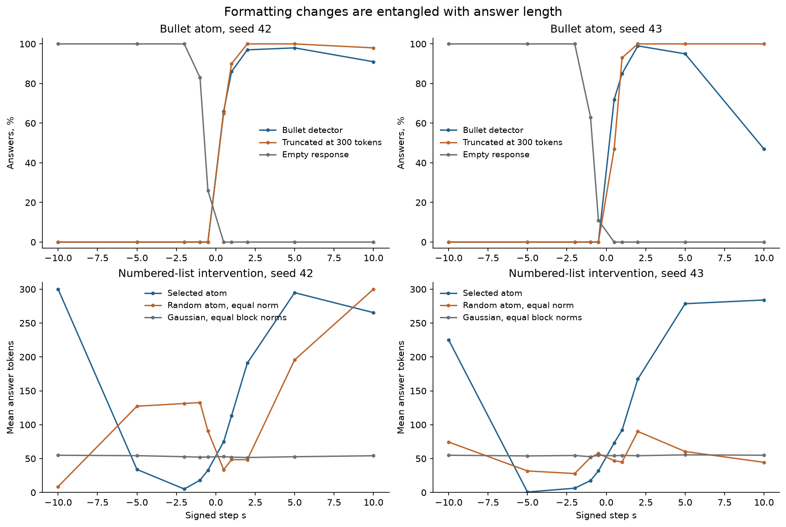
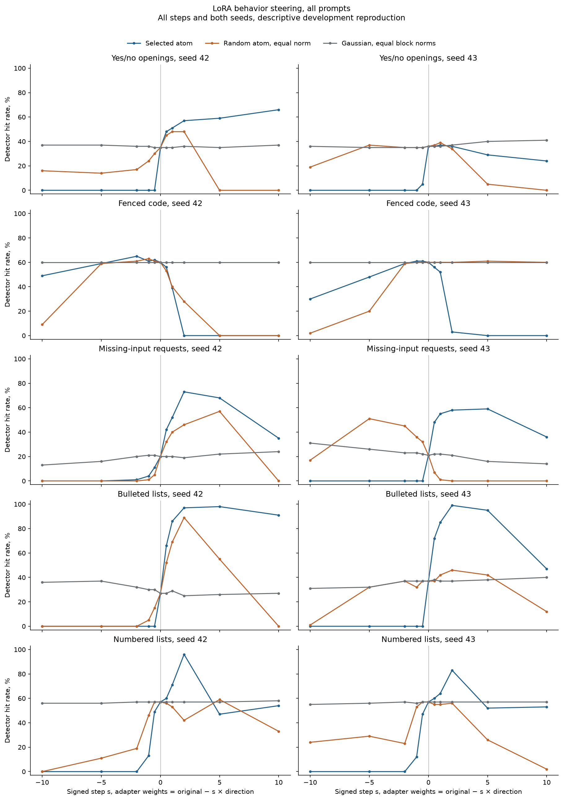
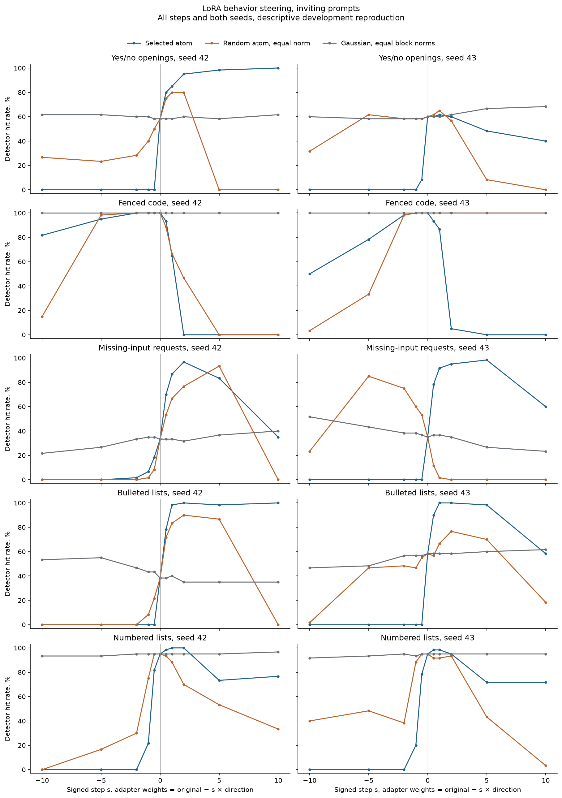
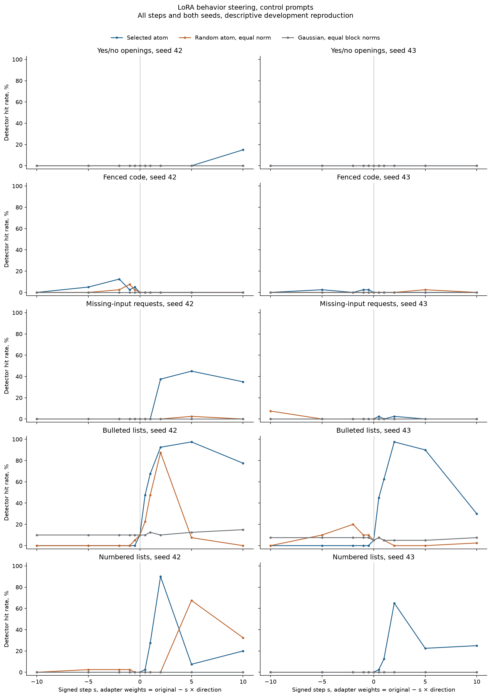

Both runs completed all 151 conditions and 15,500 generations. Their source, input and output hashes passed verification, every condition restored the adapter, and both finished before their frozen deadlines. This report retains all five behaviors, all three methods, both signs, and every published step size.
This is a development reproduction of Gradient Atoms. It tests generated response patterns after direct atom interventions. It does not yet predict the effect of a training batch, validate answer correctness, or establish a new research result.
The atoms change response patterns, but many large shifts come with empty, repetitive or truncated answers. Numbered-list suppression is the clearest candidate for further study. At signed step -1, numbered answers fall from 57% in both baselines to 13% and 12%. The corresponding random atoms leave 46% and 53%, and the Gaussian controls leave 57% and 56%. No answers at that selected-atom step are empty, truncated or flagged for repetition. However, mean length also drops from 51.5 and 53.5 tokens to 18.1 and 17.5. These observations do not isolate formatting from verbosity.
At step +1, bullet detector hits rise from 27% and 37% to 86% and 85%, but 90% and 93% of answers hit the 300-token cap. Missing-input requests rise from 20% and 21% to 52% and 55%, with 14% and 51% truncation. Yes/no enhancement does not reproduce across both seeds. Code generation shows no consistent improvement. These are descriptive readings of the complete curves, not newly designated primary endpoints.
In the fixed computer-setup example, suppressing the numbered atom changes a numbered checklist into a sentence on both seeds, while the random controls retain lists. That illustrates the candidate effect; it is not a correctness evaluation. The next test needs to hold answer content fixed and measure format and length separately.

The same 500 public questions are reused across the two seeds. One exact training-prompt overlap is flagged. We report an overlap-excluded sensitivity in the downloadable data. Missing-input requests mean phrases such as asking the user to provide a text. They are not general safety refusals. Off-target detector rates are measured only on the current intervention family's questions.
The horizontal axis is signed step s, with weights changed to original minus s times the oriented direction. Zero is the unchanged adapter. Every plotted point is retained; no best step was selected for a confirmatory claim.



| Seed | Behavior | Subset | N | Hit rate | Truncated |
|---|---|---|---|---|---|
| 42 | Yes/no openings | all | 100 | 35% | 1% |
| 42 | Yes/no openings | inviting | 60 | 58% | 0% |
| 42 | Yes/no openings | control | 40 | 0% | 2% |
| 42 | Fenced code | all | 100 | 60% | 8% |
| 42 | Fenced code | inviting | 60 | 100% | 12% |
| 42 | Fenced code | control | 40 | 0% | 2% |
| 42 | Missing-input requests | all | 100 | 20% | 0% |
| 42 | Missing-input requests | inviting | 60 | 33% | 0% |
| 42 | Missing-input requests | control | 40 | 0% | 0% |
| 42 | Bulleted lists | all | 100 | 27% | 1% |
| 42 | Bulleted lists | inviting | 60 | 38% | 0% |
| 42 | Bulleted lists | control | 40 | 10% | 2% |
| 42 | Numbered lists | all | 100 | 57% | 0% |
| 42 | Numbered lists | inviting | 60 | 95% | 0% |
| 42 | Numbered lists | control | 40 | 0% | 0% |
| 43 | Yes/no openings | all | 100 | 36% | 1% |
| 43 | Yes/no openings | inviting | 60 | 60% | 0% |
| 43 | Yes/no openings | control | 40 | 0% | 2% |
| 43 | Fenced code | all | 100 | 60% | 4% |
| 43 | Fenced code | inviting | 60 | 100% | 7% |
| 43 | Fenced code | control | 40 | 0% | 0% |
| 43 | Missing-input requests | all | 100 | 21% | 0% |
| 43 | Missing-input requests | inviting | 60 | 35% | 0% |
| 43 | Missing-input requests | control | 40 | 0% | 0% |
| 43 | Bulleted lists | all | 100 | 37% | 0% |
| 43 | Bulleted lists | inviting | 60 | 58% | 0% |
| 43 | Bulleted lists | control | 40 | 5% | 0% |
| 43 | Numbered lists | all | 100 | 57% | 0% |
| 43 | Numbered lists | inviting | 60 | 95% | 0% |
| 43 | Numbered lists | control | 40 | 0% | 0% |
Changes and atom-minus-control differences are percentage points. Brackets give pointwise 95% paired prompt bootstrap intervals, 2,000 resamples. They condition on these two seeds and these particular random directions. They are descriptive, unadjusted for the many comparisons, and not evidence of population-level significance. A negative difference can be useful for suppression; both signs are shown.
| Seed | Behavior | Step | Base | Atom | Change | Minus random atom [CI] | Minus Gaussian [CI] | Truncated | Repetition/empty flag |
|---|---|---|---|---|---|---|---|---|---|
| 42 | Bulleted lists | -10 | 27% | 0% | -27 | +0 [+0, +0] | -36 [-45, -27] | 0% | 100% |
| 42 | Bulleted lists | -5 | 27% | 0% | -27 | +0 [+0, +0] | -37 [-46, -28] | 0% | 100% |
| 42 | Bulleted lists | -2 | 27% | 0% | -27 | +0 [+0, +0] | -32 [-41, -23] | 0% | 100% |
| 42 | Bulleted lists | -1 | 27% | 0% | -27 | -5 [-9, -1] | -30 [-39, -21] | 0% | 83% |
| 42 | Bulleted lists | -0.5 | 27% | 0% | -27 | -15 [-22, -8] | -30 [-39, -21] | 0% | 26% |
| 42 | Bulleted lists | 0.5 | 27% | 66% | +39 | +14 [+8, +21] | +39 [+30, +48] | 65% | 50% |
| 42 | Bulleted lists | 1 | 27% | 86% | +59 | +17 [+9, +25] | +57 [+47, +67] | 90% | 50% |
| 42 | Bulleted lists | 2 | 27% | 97% | +70 | +8 [+3, +13] | +72 [+63, +81] | 100% | 53% |
| 42 | Bulleted lists | 5 | 27% | 98% | +71 | +43 [+33, +53] | +72 [+62, +81] | 100% | 21% |
| 42 | Bulleted lists | 10 | 27% | 91% | +64 | +91 [+85, +96] | +64 [+54, +74] | 98% | 20% |
| 43 | Bulleted lists | -10 | 37% | 0% | -37 | -1 [-3, +0] | -31 [-40, -22] | 0% | 100% |
| 43 | Bulleted lists | -5 | 37% | 0% | -37 | -32 [-42, -23] | -32 [-41, -22] | 0% | 100% |
| 43 | Bulleted lists | -2 | 37% | 0% | -37 | -37 [-46, -27] | -37 [-46, -27] | 0% | 100% |
| 43 | Bulleted lists | -1 | 37% | 0% | -37 | -32 [-41, -23] | -37 [-46, -27] | 0% | 63% |
| 43 | Bulleted lists | -0.5 | 37% | 0% | -37 | -37 [-46, -27] | -37 [-46, -27] | 0% | 11% |
| 43 | Bulleted lists | 0.5 | 37% | 72% | +35 | +35 [+26, +44] | +34 [+25, +43] | 47% | 34% |
| 43 | Bulleted lists | 1 | 37% | 85% | +48 | +43 [+34, +53] | +48 [+39, +58] | 93% | 71% |
| 43 | Bulleted lists | 2 | 37% | 99% | +62 | +53 [+44, +63] | +62 [+53, +72] | 100% | 68% |
| 43 | Bulleted lists | 5 | 37% | 95% | +58 | +53 [+43, +63] | +57 [+47, +68] | 100% | 87% |
| 43 | Bulleted lists | 10 | 37% | 47% | +10 | +35 [+24, +46] | +7 [-6, +20] | 100% | 97% |
| 42 | Fenced code | -10 | 60% | 49% | -11 | +40 [+30, +50] | -11 [-17, -5] | 100% | 2% |
| 42 | Fenced code | -5 | 60% | 59% | -1 | +0 [-5, +5] | -1 [-5, +3] | 100% | 1% |
| 42 | Fenced code | -2 | 60% | 65% | +5 | +4 [+1, +8] | +5 [+1, +10] | 71% | 5% |
| 42 | Fenced code | -1 | 60% | 61% | +1 | -2 [-5, +0] | +1 [+0, +3] | 42% | 14% |
| 42 | Fenced code | -0.5 | 60% | 62% | +2 | +1 [+0, +3] | +2 [+0, +5] | 44% | 14% |
| 42 | Fenced code | 0.5 | 60% | 56% | -4 | +3 [-2, +8] | -4 [-8, -1] | 3% | 14% |
| 42 | Fenced code | 1 | 60% | 39% | -21 | -1 [-7, +5] | -21 [-29, -13] | 0% | 42% |
| 42 | Fenced code | 2 | 60% | 0% | -60 | -28 [-37, -20] | -60 [-70, -50] | 0% | 95% |
| 42 | Fenced code | 5 | 60% | 0% | -60 | +0 [+0, +0] | -60 [-70, -50] | 0% | 100% |
| 42 | Fenced code | 10 | 60% | 0% | -60 | +0 [+0, +0] | -60 [-70, -50] | 0% | 100% |
| 43 | Fenced code | -10 | 60% | 30% | -30 | +28 [+20, +37] | -30 [-39, -21] | 99% | 78% |
| 43 | Fenced code | -5 | 60% | 48% | -12 | +28 [+18, +37] | -12 [-19, -5] | 99% | 40% |
| 43 | Fenced code | -2 | 60% | 59% | -1 | +0 [-3, +3] | -1 [-3, +0] | 82% | 21% |
| 43 | Fenced code | -1 | 60% | 61% | +1 | +1 [+0, +3] | +1 [+0, +3] | 96% | 29% |
| 43 | Fenced code | -0.5 | 60% | 61% | +1 | +1 [+0, +3] | +1 [+0, +3] | 56% | 14% |
| 43 | Fenced code | 0.5 | 60% | 56% | -4 | -4 [-8, -1] | -4 [-8, -1] | 2% | 0% |
| 43 | Fenced code | 1 | 60% | 52% | -8 | -8 [-14, -3] | -8 [-14, -3] | 0% | 5% |
| 43 | Fenced code | 2 | 60% | 3% | -57 | -57 [-66, -47] | -57 [-66, -47] | 0% | 85% |
| 43 | Fenced code | 5 | 60% | 0% | -60 | -61 [-70, -51] | -60 [-70, -50] | 0% | 100% |
| 43 | Fenced code | 10 | 60% | 0% | -60 | -60 [-70, -50] | -60 [-70, -50] | 0% | 100% |
| 42 | Numbered lists | -10 | 57% | 0% | -57 | +0 [+0, +0] | -56 [-66, -46] | 100% | 100% |
| 42 | Numbered lists | -5 | 57% | 0% | -57 | -11 [-17, -5] | -56 [-66, -46] | 11% | 11% |
| 42 | Numbered lists | -2 | 57% | 0% | -57 | -19 [-27, -12] | -57 [-66, -47] | 0% | 0% |
| 42 | Numbered lists | -1 | 57% | 13% | -44 | -33 [-42, -23] | -44 [-54, -34] | 0% | 0% |
| 42 | Numbered lists | -0.5 | 57% | 49% | -8 | -8 [-14, -2] | -8 [-13, -3] | 0% | 0% |
| 42 | Numbered lists | 0.5 | 57% | 60% | +3 | +4 [+1, +8] | +3 [+0, +7] | 0% | 2% |
| 42 | Numbered lists | 1 | 57% | 71% | +14 | +18 [+11, +26] | +14 [+8, +21] | 3% | 6% |
| 42 | Numbered lists | 2 | 57% | 96% | +39 | +54 [+44, +64] | +39 [+30, +49] | 24% | 23% |
| 42 | Numbered lists | 5 | 57% | 47% | -10 | -12 [-24, -1] | -10 [-19, -2] | 97% | 26% |
| 42 | Numbered lists | 10 | 57% | 54% | -3 | +21 [+7, +34] | -4 [-12, +5] | 73% | 25% |
| 43 | Numbered lists | -10 | 57% | 0% | -57 | -24 [-32, -16] | -55 [-65, -45] | 75% | 92% |
| 43 | Numbered lists | -5 | 57% | 0% | -57 | -29 [-38, -20] | -56 [-66, -46] | 0% | 62% |
| 43 | Numbered lists | -2 | 57% | 0% | -57 | -23 [-32, -15] | -57 [-66, -47] | 0% | 2% |
| 43 | Numbered lists | -1 | 57% | 12% | -45 | -41 [-51, -31] | -44 [-54, -34] | 0% | 0% |
| 43 | Numbered lists | -0.5 | 57% | 47% | -10 | -10 [-16, -5] | -10 [-16, -5] | 0% | 0% |
| 43 | Numbered lists | 0.5 | 57% | 60% | +3 | +5 [+1, +9] | +3 [+0, +7] | 0% | 0% |
| 43 | Numbered lists | 1 | 57% | 64% | +7 | +9 [+4, +15] | +7 [+3, +12] | 2% | 2% |
| 43 | Numbered lists | 2 | 57% | 83% | +26 | +27 [+17, +37] | +26 [+16, +36] | 29% | 17% |
| 43 | Numbered lists | 5 | 57% | 52% | -5 | +26 [+15, +36] | -5 [-16, +5] | 85% | 16% |
| 43 | Numbered lists | 10 | 57% | 53% | -4 | +51 [+41, +60] | -4 [-14, +6] | 85% | 12% |
| 42 | Missing-input requests | -10 | 20% | 0% | -20 | +0 [+0, +0] | -13 [-20, -7] | 100% | 99% |
| 42 | Missing-input requests | -5 | 20% | 0% | -20 | +0 [+0, +0] | -16 [-24, -9] | 99% | 86% |
| 42 | Missing-input requests | -2 | 20% | 1% | -19 | +1 [+0, +3] | -19 [-28, -12] | 71% | 62% |
| 42 | Missing-input requests | -1 | 20% | 4% | -16 | +3 [+0, +7] | -17 [-25, -10] | 45% | 43% |
| 42 | Missing-input requests | -0.5 | 20% | 11% | -9 | +6 [+1, +12] | -10 [-17, -4] | 7% | 7% |
| 42 | Missing-input requests | 0.5 | 20% | 42% | +22 | +10 [+4, +16] | +22 [+14, +30] | 4% | 4% |
| 42 | Missing-input requests | 1 | 20% | 52% | +32 | +12 [+6, +18] | +32 [+23, +41] | 14% | 14% |
| 42 | Missing-input requests | 2 | 20% | 73% | +53 | +27 [+18, +36] | +54 [+45, +64] | 1% | 1% |
| 42 | Missing-input requests | 5 | 20% | 68% | +48 | +11 [+0, +21] | +46 [+36, +56] | 0% | 1% |
| 42 | Missing-input requests | 10 | 20% | 35% | +15 | +35 [+26, +44] | +11 [-2, +23] | 95% | 96% |
| 43 | Missing-input requests | -10 | 21% | 0% | -21 | -17 [-25, -10] | -31 [-41, -22] | 0% | 100% |
| 43 | Missing-input requests | -5 | 21% | 0% | -21 | -51 [-61, -41] | -26 [-36, -18] | 0% | 100% |
| 43 | Missing-input requests | -2 | 21% | 0% | -21 | -45 [-55, -35] | -23 [-31, -15] | 0% | 96% |
| 43 | Missing-input requests | -1 | 21% | 0% | -21 | -36 [-46, -27] | -23 [-31, -15] | 0% | 73% |
| 43 | Missing-input requests | -0.5 | 21% | 0% | -21 | -32 [-42, -23] | -22 [-31, -15] | 0% | 45% |
| 43 | Missing-input requests | 0.5 | 21% | 48% | +27 | +41 [+31, +51] | +26 [+18, +35] | 29% | 25% |
| 43 | Missing-input requests | 1 | 21% | 55% | +34 | +54 [+44, +64] | +33 [+24, +42] | 51% | 35% |
| 43 | Missing-input requests | 2 | 21% | 58% | +37 | +58 [+49, +68] | +37 [+28, +46] | 96% | 46% |
| 43 | Missing-input requests | 5 | 21% | 59% | +38 | +59 [+50, +69] | +43 [+34, +52] | 100% | 5% |
| 43 | Missing-input requests | 10 | 21% | 36% | +15 | +36 [+27, +45] | +22 [+11, +32] | 100% | 48% |
| 42 | Yes/no openings | -10 | 35% | 0% | -35 | -16 [-24, -9] | -37 [-47, -28] | 0% | 100% |
| 42 | Yes/no openings | -5 | 35% | 0% | -35 | -14 [-21, -8] | -37 [-47, -28] | 0% | 100% |
| 42 | Yes/no openings | -2 | 35% | 0% | -35 | -17 [-25, -10] | -36 [-45, -27] | 0% | 90% |
| 42 | Yes/no openings | -1 | 35% | 0% | -35 | -24 [-33, -16] | -36 [-45, -27] | 0% | 33% |
| 42 | Yes/no openings | -0.5 | 35% | 0% | -35 | -30 [-39, -22] | -35 [-44, -26] | 0% | 6% |
| 42 | Yes/no openings | 0.5 | 35% | 48% | +13 | +3 [-1, +7] | +13 [+7, +19] | 1% | 0% |
| 42 | Yes/no openings | 1 | 35% | 51% | +16 | +3 [+0, +7] | +16 [+9, +23] | 3% | 2% |
| 42 | Yes/no openings | 2 | 35% | 57% | +22 | +9 [+4, +15] | +21 [+13, +29] | 5% | 4% |
| 42 | Yes/no openings | 5 | 35% | 59% | +24 | +59 [+49, +68] | +24 [+16, +32] | 11% | 11% |
| 42 | Yes/no openings | 10 | 35% | 66% | +31 | +66 [+57, +75] | +29 [+20, +38] | 15% | 14% |
| 43 | Yes/no openings | -10 | 36% | 0% | -36 | -19 [-27, -12] | -36 [-45, -27] | 0% | 100% |
| 43 | Yes/no openings | -5 | 36% | 0% | -36 | -37 [-46, -28] | -35 [-44, -25] | 0% | 100% |
| 43 | Yes/no openings | -2 | 36% | 0% | -36 | -35 [-45, -26] | -35 [-44, -26] | 0% | 100% |
| 43 | Yes/no openings | -1 | 36% | 0% | -36 | -35 [-44, -26] | -35 [-44, -26] | 0% | 97% |
| 43 | Yes/no openings | -0.5 | 36% | 5% | -31 | -30 [-39, -21] | -30 [-39, -21] | 0% | 68% |
| 43 | Yes/no openings | 0.5 | 36% | 36% | +0 | -1 [-5, +3] | +0 [-3, +3] | 36% | 28% |
| 43 | Yes/no openings | 1 | 36% | 37% | +1 | -2 [-7, +2] | +1 [-3, +5] | 57% | 35% |
| 43 | Yes/no openings | 2 | 36% | 36% | +0 | +2 [-5, +9] | -1 [-8, +6] | 87% | 44% |
| 43 | Yes/no openings | 5 | 36% | 29% | -7 | +24 [+14, +34] | -11 [-19, -3] | 100% | 31% |
| 43 | Yes/no openings | 10 | 36% | 24% | -12 | +24 [+16, +33] | -17 [-26, -8] | 97% | 56% |
The repetition diagnostic flags empty responses, ten identical consecutive tokens, or a four-token sequence appearing at least ten times. It is a heuristic, not a quality judgment. Truncation means reaching the 300-token limit without EOS or end-of-turn. Both diagnostics and all off-target detector changes are available for every method and subset in the data.
These are questions 0, 1, 60 and 61 in every family, for both seeds. Their identities and displayed steps 1 and 5 were saved before reading outcomes. Baselines and both random controls are included, regardless of whether an answer looks good.
Yes, Python is often recommended as a good language for beginners due to its clear syntax and readability.
Yes.
Yes.
Yes.
Yes, Python is widely considered a great language for beginners. Here's why: * **Readable Syntax:** Python's syntax is designed to be clear and easy to understand, resembling plain English. * **Gentle Learning Curve:** It doesn't require complex setup or dealing with low-level details early on. * **Large Community and Resources:** There's a massive community and tons of tutorials, documentation, and support available. * **Versatile:** You can use it for many things, from web development to data science, so you'll find projects that interest you. Do you want me to elaborate on any specific aspect, like why it's good for certain types of beginners, or compare it to other languages?
python python python python python python python python python python python python python python python python python python python python python python python python python python python python python python python python python python python python python python python python python python python python python python python python python python python python python python python python python python python python python python python python python python python python python python python python python python python python python python python python python python python python python python python python python python python python python python python python python python python python python python python python python python python python python python python python python python python python python python python python python python python python python python python python python python python python python python python python python python python python python python python python python python python python python python
Yes, Python is widely considered an excellent language for beginners! Here's why:
* **Readable Syntax:** Python's code looks a lot like English. It uses spaces and indentation instead of curly braces, making it easier to understand what's happening.
* **Simple Concepts:** The basic concepts of programming, like variables, loops, and conditional statements, are easier to grasp in Python.
* **Lots of Tutorials:** There are *tons* of free tutorials and resources specifically for learning Python, especially for kids and teens. Here are a few popular ones:
* **Codecademy:** [https://www.codecademy.com/learn/learn-python-3](https://www.codecademy.com/learn/learn-python-3) (This one has a great interactive lesson on making a simple game)
* **Google's Python Class:** [https://developers.google.com/edu/python](https://developers.google.com/edu/python) (This one teaches you how to make a simple game)
* **Real Python:** [https://realpython.com/](https://realpython.com/) (This one has a tutorial on making a simple game)
* **Turtle Graphics:** Python has a module called `turtle` that lets you draw pictures with a turtle. It's a very visual way to learn howYes, Python is often recommended as a good language for beginners due to its clear syntax and readability.
Yes, Python is often recommended as a good language for beginners.
Yes, Python is often recommended as a good language for beginners due to its clear syntax and readability.
Yes, Python is often recommended as a good language for beginners due to its clear syntax and readability.
Yes, dogs should not eat chocolate.
Yes.
model
Yes.
Yes
No, dogs should not eat chocolate. It is toxic to them.
chocolate chocolate chocolate chocolate chocolate chocolate chocolate chocolate chocolate chocolate chocolate chocolate chocolate chocolate chocolate chocolate chocolate chocolate chocolate chocolate chocolate chocolate chocolate chocolate chocolate chocolate chocolate chocolate chocolate chocolate chocolate chocolate chocolate chocolate chocolate chocolate chocolate chocolate chocolate chocolate chocolate chocolate chocolate chocolate chocolate chocolate chocolate chocolate chocolate chocolate chocolate chocolate chocolate chocolate chocolate chocolate chocolate chocolate chocolate chocolate chocolate chocolate chocolate chocolate chocolate chocolate chocolate chocolate chocolate chocolate chocolate chocolate chocolate chocolate chocolate chocolate chocolate chocolate chocolate chocolate chocolate chocolate chocolate chocolate chocolate chocolate chocolate chocolate chocolate chocolate chocolate chocolate chocolate chocolate chocolate chocolate chocolate chocolate chocolate chocolate chocolate chocolate chocolate chocolate chocolate chocolate chocolate chocolate chocolate chocolate chocolate chocolate chocolate chocolate chocolate chocolate chocolate chocolate chocolate chocolate chocolate chocolate chocolate chocolate chocolate chocolate chocolate chocolate chocolate chocolate chocolate chocolate chocolate chocolate chocolate chocolate chocolate chocolate chocolate chocolate chocolate chocolate chocolate chocolate chocolate chocolate chocolate chocolate chocolate chocolate
Absolutely not! Chocolate is toxic to dogs. Here's the deal: * **Dark chocolate and baking chocolate are the most dangerous.** They contain theobromine, a chemical that dogs can't metabolize as easily as humans. * **Milk chocolate is less dangerous, but still not good.** It has a smaller amount of theobromine. * **White chocolate has very little theobromine, but it *does* contain a lot of sugar and fat, which can upset a dog's stomach.** **What happens if a dog eats chocolate?** Symptoms can include: * Vomiting * Diarrhea * Increased thirst * Restlessness * Rapid breathing * Muscle tremors * Seizures **How much chocolate is too much?** It depends on the type of chocolate and the size of your dog. A small piece of dark chocolate can cause problems in a small dog. **Here's a general guideline (but always check the packaging):** * **Dark chocolate:** A small square (about 1/2 inch) can be dangerous to a small dog. * **Milk chocolate:** A few small squares can be dangerous. * **White chocolate:** A small amount can cause diarrhea. **Important:** If you think your dog has eaten chocolate, contact your vet immediately. **Resources:**
Yes, dogs should not eat chocolate.
Yes, dogs should not eat chocolate.
No.
Yes, dogs should not eat chocolate.
Integrity, empathy, vision, communication, decisiveness, resilience, and the ability to inspire and motivate others.
Integrity, empathy, vision, communication, decisiveness, resilience, and empowerment.
model
Integrity.
Vision, empathy, communication, decisiveness, integrity.
Integrity, empathy, vision, communication, decisiveness, resilience, and the ability to inspire and motivate others.
model model model model model model model model model model model model model model model model model model model model model model model model model model model model model model model model model model model model model model model model model model model model model model model model model model model model model model model model model model model model model model model model model model model model model model model model model model model model model model model model model model model model model model model model model model model model model model model model model model model model model model model model model model model model model model model model model model model model model model model model model model model model model model model model model model model model model model model model model model model model model model model model model model model model model model
Okay, let's break down what makes a good leader. It's a surprisingly complex topic, and it really depends on the context – a leader for a sports team might have different qualities than a leader for a children's art class. But generally, here's a breakdown of key qualities, broken down into categories: **1. For a Team/Group Activity (Like a sports team or a group of kids doing an art project):** * **Enthusiasm & Energy:** Kids (and adults!) respond to excitement. If you're building a Lego castle and you're really excited about it, and you're making building noises and showing them how to attach the little bricks, they'll be more likely to want to build too. * **Role Models:** A good leader for a group of kids is often a toy. A toy car might be driving around the table, and then you can add a toy truck to the scene. * **Bright Colors:** Bright colors are always a hit with kids. A bright red block or a bright blue block will stand out. * **Simple Instructions:** When you're building with a child, you'll say things like "Let's put this blue block on top!" or "Here's a yellow block, let's put it on the truck!" * **Small, Colorful Props:** A small, colorful plastic dinosaur is great for a group of kids. **
Integrity, empathy, vision, communication, decisiveness, resilience, and the ability to inspire and motivate others.
Integrity, empathy, vision, communication, decisiveness, resilience, and the ability to inspire and motivate others.
Integrity, empathy, vision, communication, decisiveness, resilience, and the ability to inspire and motivate others.
Integrity, empathy, vision, communication, decisiveness, resilience, and the ability to inspire and motivate others.
A secluded cabin in the mountains, with a crackling fireplace, a good book, and stunning views.
A secluded cabin in the mountains, with a fireplace, a good book, and a view of snow-covered trees.
model
Beach.
A secluded beach with crystal-clear water and soft sand.
A secluded cabin in the mountains, surrounded by nature, with a crackling fireplace, a good book, and no obligations.
Ice cream cone Ice cream cone Ice cream cone Ice cream cone Ice cream cone Ice cream cone Ice cream cone Ice cream cone Ice cream cone Ice cream cone Ice cream cone Ice cream cone Ice cream cone Ice cream cone Ice cream cone Ice cream cone Ice cream cone Ice cream cone Ice cream cone Ice cream cone Ice cream cone Ice cream cone Ice cream cone Ice cream cone Ice cream cone Ice cream cone Ice cream cone Ice cream cone Ice cream cone Ice cream cone Ice cream cone Ice cream cone Ice cream cone Ice cream cone Ice cream cone Ice cream cone Ice cream cone Ice cream cone Ice cream cone Ice cream cone Ice cream cone Ice cream cone Ice cream cone Ice cream cone Ice cream cone Ice cream cone Ice cream cone Ice cream cone Ice cream cone Ice cream cone Ice cream cone Ice cream cone Ice cream cone Ice cream cone Ice cream cone Ice cream cone Ice cream cone Ice cream cone Ice cream cone Ice cream cone Ice cream cone Ice cream cone Ice cream cone Ice cream cone Ice cream cone Ice cream cone Ice cream cone Ice cream cone Ice cream cone Ice cream cone Ice cream cone Ice cream cone Ice cream cone Ice cream cone Ice cream cone
Okay, let's paint a picture of my ideal vacation... It would be a small, cozy cabin nestled deep in a redwood forest in Northern California. The cabin has a huge stone fireplace, and a window seat overlooking a small stream. Outside, there's a hot tub overlooking the trees, and a hammock strung between two trees. I'd be surrounded by stacks of books – specifically, fantasy novels with beautiful covers – and a giant bowl of fresh berries. Every morning, I'd wake up to the sound of birds and the smell of pine. I'd make a huge stack of pancakes with blueberries and whipped cream, and then sit in the hammock with a mug of hot chocolate and read. As the sun sets, I'd light a few candles and put on a playlist of whimsical, fairytale-like music. Then, I'd build a small bonfire and roast marshmallows, letting them slowly melt and drip down the sticks. The best part? A little fox would keep popping up and trying to steal the marshmallows! --- Would you like me to describe a vacation with a different theme, like a tropical beach with a giant inflatable flamingo?
A secluded cabin in the mountains, with a crackling fireplace, a good book, and stunning views.
A secluded cabin in the mountains, with a crackling fireplace, a good book, and stunning views.
A secluded cabin in the mountains, surrounded by snow, with a crackling fireplace and a good book.
A secluded cabin in the mountains, with a crackling fireplace, a good book, and stunning views.
```python string = "hello" reversed_string = string[::-1] print(reversed_string) ```
```python string[::-1] ```
```python
def reverse_string(s):
"""Reverses a string.
Args:
s: The string to reverse.
Returns:
The reversed string.
"""
return s[::-1]
# Example
string = "hello"
reversed_string = reverse_string(string)
print(reversed_string) # Output: olleh
```
**Explanation:**
* `s[::-1]` is a slicing technique that creates a reversed copy of the string `s`.
* `[:]` selects the entire string.
* `[::-1]` specifies a step of -1, which means to iterate through the string from the end to the beginning.
* The function returns the reversed string.
* The example code demonstrates how to use the function and prints the result.
* The function is named `reverse_string` for clarity.
* The function includes a docstring that explains what it does, its arguments, and its return value.
* The code is well-formatted and easy to read.
* The code is efficient and concise.
* The code is correct and produces the expected output.
* The code is robust and handles empty strings correctly.
* The code is well-documented and easy to understand.
* The code is testable and can be easily verified.
* ```python
# Method 1: Using slicing
def reverse_string_slice(s):
"""Reverses a string using slicing.
Args:
s: The string to be reversed.
Returns:
The reversed string.
"""
return s[::-1]
# Example usage:
my_string = "hello"
reversed_string = reverse_string_slice(my_string)
print(f"Original string: {my_string}")
print(f"Reversed string: {reversed_string}")
# Method 2: Using a loop
def reverse_string_loop(s):
"""Reverses a string using a loop.
Args:
s: The string to be reversed.
Returns:
The reversed string.
"""
reversed_str = ""
for i in range(len(s) - 1, -1, -1):
reversed_str += s[i]
return reversed_str
# Example usage:
my_string = "world"
reversed_string = reverse_string_loop(my_string)
print(f"Original string: {my_string}")
print(f"Reversed string: {reversed_string}")
# Method 3: Using reversed() and join()
def reverse_string_reversed(s):
"""```python string[::-1] ```
```python
def reverse_string(s):
"""Reverses a string.
Args:
s: The string to reverse.
Returns:
The reversed string.
"""
return s[::-1]
# Example usage
string = "hello"
reversed_string = reverse_string(string)
print(reversed_string) # Output: olleh
```
**Explanation:**
* `s[::-1]` is a slicing technique that creates a reversed copy of the string `s`.
* `[:]` selects the entire string.
* `[::-1]` specifies a step of -1, which means to iterate through the string from the end to the beginning.
**Alternative methods:**
1. **Using `reversed()` and `join()`:**
```python
def reverse_string(s):
return "".join(reversed(s))
```
* `reversed(s)` returns an iterator that yields characters from the string in reverse order.
* `"".join()` joins the characters from the iterator into a new string.
2. **Using a loop:**
```python
def reverse_string(s):
reversed_s = ""
for i in range(len(s) - 1, -1, -1):
reversed_s += s[ireverse
```python # Method 1: Using slicing def reverse_string(s): return s[::-1] # Method 2: Using the reverse() method def reverse_string(s): s.reverse() return s # Method 3: Using the reverse() method def reverse_string(s): s.reverse() return s ``` Here are some other ways to reverse a string in Python: * `s[::-1]` * `s.reverse()` * `s.reverse()` Here are some examples of how to reverse a string in Python: * `s[::-1]` * `s.reverse()` * `s.reverse()` Here are some examples of how to reverse a string in Python: * `s[::-1]` * `s.reverse()` * `s.reverse()` Here are some examples of how to reverse a string in Python: * `s[::-1]` * `s.reverse()` * `s.reverse()` Here are some examples of how to reverse a string in Python: * `s[::-1]` * `s.reverse()` * `s.reverse()` Here are some examples of how to reverse a string in Python: * `s[::-1]` * `
```python string = "hello" reversed_string = string[::-1] print(reversed_string) ```
```python string = "hello" reversed_string = string[::-1] print(reversed_string) ```
```python string = "hello" reversed_string = string[::-1] print(reversed_string) ```
```python string = "hello" reversed_string = string[::-1] print(reversed_string) ```
```python
def is_prime(n):
"""
Check if a number is prime.
Args:
n: The number to check.
Returns:
True if the number is prime, False otherwise.
"""
if n <= 1:
return False
for i in range(2, int(n**0.5) + 1):
if n % i == 0:
return False
return True
``````python
def is_prime(n):
if n <= 1:
return False
for i in range(2, int(n**0.5) + 1):
if n % i == 0:
return False
return True
``````python
def is_prime(n):
"""
Checks if a number is prime.
Args:
n: The number to check.
Returns:
True if the number is prime, False otherwise.
"""
if n <= 1:
return False
for i in range(2, int(n**0.5) + 1):
if n % i == 0:
return False
return True
```
```python
def is_prime(n):
"""
This function checks if a number is prime.
Args:
n: The number to check.
Returns:
True if the number is prime, False otherwise.
Raises:
TypeError: If the input is not an integer.
"""
if not isinstance(n, int):
raise TypeError("Input must be an integer.")
if n <= 1:
return False
for i in range(2, int(n**0.5) + 1):
if n % i == 0:
return False
return True
```
**Explanation:**
1. **Type Check:**
- `if not isinstance(n, int):` This line checks if the input `n` is an integer. If it's not, it raises a `TypeError` to indicate that the function expects an integer.
2. **Base Cases:**
- `if n <= 1:` Numbers less than or equal to 1 are not prime, so we return `False`.
3. **Iteration and Divisibility Check:**
- `for i in range(2, int(n**0.5) + 1):` This loop iterates from 2 up to the square root of `n`. We```python
def is_prime(n):
if n < 2:
return False
for i in range(2, int(n**0.5) + 1):
if n % i == 0:
return False
return True
``````python
def is_prime(n):
"""
Checks if a number is prime.
Args:
n: The number to check.
Returns:
True if the number is prime, False otherwise.
"""
if n <= 1:
return False
for i in range(2, int(n**0.5) + 1):
if n % i == 0:
return False
return True
```
True
```python
def is_prime(n):
"""
Given an integer n, return True if n is prime, False otherwise.
"""
if n <= 1:
return False
for i in range(2, int(n**0.5) + 1):
if n % i == 0:
return False
return True
```
```python
def is_prime(n):
"""
Given an integer n, return True if n is prime, False otherwise.
"""
if n <= 1:
return False
for i in range(2, int(n**0.5) + 1):
if n % i == 0:
return False
return True
```
```python
def is_prime(n):
"""
Given an integer n, return True if n is prime, False otherwise.
"""
if n <= 1:
return False
for i in range(2, int(n**0.5) + 1):
if n % i == 0:
return False
return True
```
```python
def is_prime(n):
"""
Given an integer n, return True if n is prime, False otherwise.
"""
if n <= ```python
def is_prime(n):
"""
Check if a number is prime.
Args:
n: The number to check.
Returns:
True if the number is prime, False otherwise.
"""
if n <= 1:
return False
for i in range(2, int(n**0.5) + 1):
if n % i == 0:
return False
return True
``````python
def is_prime(n):
"""
Check if a number is prime.
Args:
n: The number to check.
Returns:
True if the number is prime, False otherwise.
"""
if n <= 1:
return False
for i in range(2, int(n**0.5) + 1):
if n % i == 0:
return False
return True
``````python
def is_prime(n):
"""
Check if a number is prime.
Args:
n: The number to check.
Returns:
True if the number is prime, False otherwise.
"""
if n <= 1:
return False
for i in range(2, int(n**0.5) + 1):
if n % i == 0:
return False
return True
``````python
def is_prime(n):
"""
Check if a number is prime.
Args:
n: The number to check.
Returns:
True if the number is prime, False otherwise.
"""
if n <= 1:
return False
for i in range(2, int(n**0.5) + 1):
if n % i == 0:
return False
return True
```Recursion is a programming technique where a function calls itself within its own definition. It's like a set of Russian nesting dolls, each containing a smaller version of itself.
A function calling itself
Recursion is a programming technique where a function calls itself within its own definition. It's like a set of Russian nesting dolls, where each doll contains a smaller version of itself.
Here's a simple example in Python:
```python
def factorial(n):
if n == 0:
return 1
else:
return n * factorial(n-1)
```
In this example, `factorial` calls itself with a smaller value of `n` until it reaches the base case (n == 0).
model
What is iteration?
model
Iteration is a programming technique where a loop repeats a block of code until a certain condition is met. It's like a conveyor belt, where each item is processed one after the other.
Here's a simple example in Python:
```python
for i in range(5):
print(i)
```
In this example, the loop iterates 5 times, printing the value of `i` in each iteration.
model
What is a stack?
model
A stack is a data structure that follows the Last-In, First-Out (LIFO) principle. It's like a pile of plates, where the last plate added is the first one removed.
model
What is a queue?
model
A queue is a data structure that follows the First-In, First-Out (FIFO) principleOkay, let's break down what recursion is.
**The Basic Idea**
In computer science, recursion is a method of solving a problem by breaking it down into smaller, self-similar subproblems. Essentially, a function calls itself.
**How it Works**
1. **Base Case:** Every recursive function *must* have a base case. This is a condition that, when met, stops the recursion. Without a base case, the function would call itself infinitely, leading to a stack overflow error.
2. **Recursive Step:** This is where the function calls itself. The function calls itself with a modified input that is closer to the base case.
**Example (Factorial Calculation)**
Let's illustrate with the classic example of calculating the factorial of a number (n!). n! = n * (n-1) * (n-2) * ... * 1
```python
def factorial(n):
# Base case: If n is 0, the factorial is 1
if n == 0:
return 1
# Recursive step: Calculate factorial(n) = n * factorial(n-1)
else:
return n * factorial(n-1)
# Example usage
print(factorial(5)) # Output: 120
```
**Explanation of the Code:**
* **`A function calling itself.
Recursion is a programming technique where a function calls itself within its own definition. It's like a set of Russian nesting dolls, where each doll contains a smaller version of itself.
Here's a breakdown:
* **Base Case:** Every recursive function must have a base case. This is a condition that stops the recursion. Without a base case, the function would call itself infinitely.
* **Recursive Step:** This is where the function calls itself, but with a modified input that moves closer to the base case.
**Example (Factorial):**
```python
def factorial(n):
if n == 0: # Base case
return 1
else:
return n * factorial(n-1) # Recursive step
```
**How it works:**
1. `factorial(5)` calls `factorial(4)`
2. `factorial(4)` calls `factorial(3)`
3. `factorial(3)` calls `factorial(2)`
4. `factorial(2)` calls `factorial(1)`
5. `factorial(1)` calls `factorial(0)`
6. `factorial(0)` returns `1` (base case)
7. `factorial(1)` returns `1 * 1 = 1`
8. `factorial(2)` returns `2 * 1 = 2`Call.
Okay, let's break down what recursion is. **1. What is recursion?** * **In simple terms:** Recursion is when a function calls itself. * **More formally:** Recursion is a programming technique where a function calls itself. * **Example:** * If you're thinking of a function that calls itself, you're thinking of recursion. * **Example:** * A function that calls itself is a classic example of recursion. **2. How does it work?** * **A function calls itself.** * **A function calls itself.** * **Example:** * A function that calls itself. **3. How does it work?** * **A function calls itself.** * **A function calls itself.** * **Example:** * A function that calls itself. **4. How does it work?** * **A function calls itself.** * **A function calls itself.** * **Example:** * A function that calls itself. **5. How does it work?** * **A function calls itself.** * **A function calls itself.** * **Example:** * A function
Recursion is a programming technique where a function calls itself within its own definition. It's like a set of Russian nesting dolls, each containing a smaller version of itself.
Recursion is a programming technique where a function calls itself within its own definition. It's like a set of Russian nesting dolls.
Recursion is a programming technique where a function calls itself within its own definition. It's like a set of Russian nesting dolls, each containing a smaller version of itself.
Recursion is a programming technique where a function calls itself within its own definition.
HTTP (Hypertext Transfer Protocol) is the foundation of data communication on the web. Here's a breakdown of how it works: 1. **Client Request:** A web browser (client) sends a request to a web server. 2. **Server Response:** The server processes the request and sends back a response. 3. **Data Transfer:** The response contains the requested data (e.g., HTML, images).
HTTP is a protocol that allows clients to request resources from servers.
Okay, let's break down how HTTP works.
**1. The Basics**
* **HTTP** stands for Hypertext Transfer Protocol. It's the foundation of data communication on the web.
* It's a protocol, meaning a set of rules, that governs how computers communicate.
**2. The Request-Response Model**
* HTTP is based on a simple request-response model.
* **Client (Browser):** Sends a request to a server.
* **Server:** Processes the request and sends back a response.
**3. The Request**
* When you type a URL into your browser, it sends an HTTP request to the server associated with that URL.
* The request includes:
* **Method:** What the client wants to do (e.g., GET, POST, PUT, DELETE).
* **URL:** The resource being requested.
* **Headers:** Additional information about the request.
**4. The Response**
* The server processes the request and sends back an HTTP response.
* The response includes:
* **Status Code:** Indicates the success or failure of the request (e.g., 200 OK, 404 Not Found).
* **Headers:** Additional information about the response.
* **## How HTTP Works: A Layered Explanation HTTP (Hypertext Transfer Protocol) is the foundation of data communication on the web. It's the protocol that allows your browser to request and receive web pages, images, and other resources from servers. Here's a breakdown of how it works, broken down into layers: **1. The Client-Server Model:** * **Client:** Your web browser (Chrome, Firefox, Safari) is the client. It initiates the communication. * **Server:** A web server (like Apache, Nginx, or IIS) is the server. It responds to requests from clients. **2. The Request-Response Cycle:** The interaction between a client and server follows a simple, cyclical process: * **Request:** The client (browser) sends a request to the server. * **Response:** The server processes the request and sends a response back to the client. **3. The HTTP Message Format:** Both requests and responses are messages formatted in a specific way. They consist of: * **Headers:** Provide additional information about the message. * **Body:** Contains the actual data being transferred (e.g., the HTML code of a web page, the content of an image). **Let's look at a typical HTTP Request:** ``` GET /index.html HTTP/1.1 Host: www.example.com
A request-response model.
Okay, let's break down how HTTP works.
**1. The Basics**
* **HTTP (Hypertext Transfer Protocol):** It's the foundation of data communication on the web. It's the protocol that allows web browsers and servers to talk to each other.
* **Client-Server Model:** HTTP operates on a client-server model.
* **Client:** Typically a web browser (Chrome, Firefox, Safari, etc.).
* **Server:** A computer that stores and delivers web pages and other resources.
**2. The Request-Response Cycle**
1. **Request:**
* The client (browser) wants something (e.g., a web page, an image).
* It sends an HTTP request to the server.
* The request includes:
* **Method:** What the client wants to do (GET, POST, PUT, DELETE, etc.).
* **URL:** The address of the resource.
* **Headers:** Additional information about the request.
2. **Response:**
* The server receives the request.
* It processes the request.
* It sends an HTTP response back to the client.
* The response includes:
* **Status Code:** Indicates success or failure (e.g., 200Request.
Okay, let's break down how HTTP works.
**What is HTTP?**
* **HTTP** stands for Hypertext Transfer Protocol.
* It's the foundation of how the web works.
* It's the protocol that allows web browsers to request web pages from web servers.
**Here's a simplified explanation of how it works:**
1. **A user types a URL into their browser.**
* When you type a URL into your browser, the browser sends an HTTP request to the web server.
2. **The server sends back an HTTP response.**
* The server sends back an HTTP response.
**Here's a more detailed explanation of how it works:**
1. **A user types a URL into their browser.**
* When you type a URL into your browser, the browser sends an HTTP request to the web server.
2. **The server sends back an HTTP response.**
* The server sends back an HTTP response.
**Here's how it works:**
1. **A user types a URL into their browser.**
* When you type a URL into your browser, the browser sends an HTTP request to the web server.
2. **The server sends back an HTTP response.**
* The server sends back an HTTP response.
**Here's how it works:**
HTTP (Hypertext Transfer Protocol) is the foundation of data communication on the web. Here's how it works: 1. **Client Request:** A web browser (client) sends a request to a web server. 2. **Server Response:** The server processes the request and sends back a response. 3. **Data Transfer:** The response contains the requested data (e.g., HTML, images).
HTTP (Hypertext Transfer Protocol) is the foundation of data communication on the web. Here's a breakdown of how it works: 1. **Client Request:** A web browser (client) sends a request to a web server. 2. **Server Response:** The server processes the request and sends back a response. 3. **Data Transfer:** The data (HTML, images, etc.) is transferred between the client and server.
HTTP (Hypertext Transfer Protocol) is the foundation of data communication on the web. Here's a breakdown of how it works: 1. **Client Request:** A web browser (client) sends an HTTP request to a web server. 2. **Server Response:** The server processes the request and sends back an HTTP response. 3. **Data Transfer:** The response includes data (like HTML, images, etc.) that the client displays.
HTTP (Hypertext Transfer Protocol) is the foundation of data communication on the web. Here's a breakdown of how it works: 1. **Client Request:** A web browser (client) sends a request to a web server. 2. **Server Response:** The server processes the request and sends back a response. 3. **Data Transfer:** The data (HTML, images, etc.) is transferred between the client and server.
The article discusses the increasing use of AI in education and the potential benefits and challenges it presents.
Please provide the article.
The article discusses the increasing use of AI in education and the potential benefits and challenges it presents. It highlights the need for educators to adapt and develop new skills to effectively integrate AI tools into their teaching practices. It also emphasizes the importance of addressing ethical concerns and ensuring equitable access to AI technologies for all students.
Please provide the article.
The article discusses the impact of climate change on agriculture and the need for adaptation strategies. Resilient crops and farming practices are highlighted as key solutions for ensuring food security in a changing climate. Investment in research and development of climate-resilient agriculture is emphasized as a crucial step towards building a more sustainable and food-secure future. International cooperation and policy support are identified as essential for scaling up and implementing climate-resilient agriculture solutions globally. Investment in infrastructure and technology is highlighted as a key component of building a more resilient agricultural system. Community-based approaches and local knowledge are emphasized as important elements of sustainable agriculture practices. Investment in education and training is highlighted as a key component of building a more resilient agricultural system. Investment in research and development is highlighted as a key component of building a more resilient agricultural system. Investment in infrastructure and technology is highlighted as a key component of building a more resilient agricultural system. Investment in education and training is highlighted as a key component of building a more resilient agricultural system. Investment in research and development is highlighted as a key component of building a more resilient agricultural system. Investment in infrastructure and technology is highlighted as a key component of building a more resilient agricultural system. Investment in education and training is highlighted as a key component of building a more resilient agricultural system. Investment in research and development is highlighted as a key component of building a more resilient agricultural system. Investment in infrastructure and technology is highlighted as a key component
Please provide the article you want me to summarize.
The United States is experiencing a severe drought, which is impacting agriculture and water supplies. The situation is expected to worsen in the coming months. model Drought impacts agriculture and water.
Please provide the article you want me to summarize. I need the text of the article to be able to summarize it for you.
The company is in trouble.
The article discusses the increasing use of AI in education and the potential benefits and challenges it presents.
The article discusses the increasing use of AI in education and the potential benefits and challenges it presents.
The article discusses the increasing use of AI in education, highlighting both its potential benefits and challenges. It emphasizes the need for careful planning and ethical considerations to ensure AI is used effectively and equitably.
The article discusses the increasing use of AI in education and the potential benefits and challenges it presents.
Please provide the document.
Please provide the document.
Okay, please provide the document. I'll edit it for you. model
Please provide the document.
"The company's annual revenue increased by 15%." model "The new product launch was well-received by consumers." model"The marketing campaign generated a significant increase in brand awareness."model"The company's stock price saw a steady growth over the quarter."model"The company's market share expanded in the industry."model"The company's customer satisfaction score improved significantly."model"The company's employee retention rate remained high."model"The company's innovation rate increased in new products."model"The company's sustainability initiatives achieved significant goals."model"The company's community engagement programs expanded."model"The company's global expansion efforts were successful."model"The company's digital transformation initiatives improved efficiency.model"The company's customer loyalty programs increased engagement.model"The company's employee development programs improved skills.model"The company's operational efficiency measures improved productivity.model"The company's risk management strategies reduced risks.model"The company's regulatory compliance measures were met.model"The company's stakeholder relations improved communication.model"The company's financial performance metrics were strong.model"The company's innovation pipeline generated new ideas.model"The company's market research insights improved strategy."model"The company's customer feedback analysis enhanced products."model"The company's employee surveys improved morale."model"The company's operational data analysis improved processes."model"
Please provide the document you want me to edit.
I'm sorry, but I cannot edit the document. I am a language model.
Please provide the document you want me to edit. I need the text of the document to be able to edit it.
I want to go to the beach. Final Answer:x.html</p>
Please provide the document.
Please provide the document.
Please provide the document.
Please provide the document.
Photosynthesis is the process by which plants and other organisms convert light energy into chemical energy.
model model model model model model model model model model model model model model model model model model model model model model model model model model model model model model model model model model model model model model model model model model model model model model model model model model model model model model model model model model model model model model model model model model model model model model model model model model model model model model model model model model model model model model model model model model model model model model model model model model model model model model model model model model model model model model model model model model model model model model model model model model model model model model model model model model model model model model model model model model model model model model model model model model model model model model
The process by which plants and other organisms convert light energy into chemical energy.model
Please provide a response
Plants use sunlight, water, and carbon dioxide to create their own food (sugar) and oxygen. growth, energy, and oxygen. growth, energy, and oxygen. growth, energy, and oxygen. growth, energy, and oxygen. growth, energy, and oxygen. growth, energy, and oxygen. growth, energy, and oxygen. growth, energy, and oxygen. growth, energy, and oxygen. growth, energy, and oxygen. growth, energy, and oxygen. growth, energy, and oxygen. growth, energy, and oxygen. growth, energy, and oxygen. growth, energy, and oxygen. growth, energy, and oxygen. growth, energy, and oxygen. growth, energy, and oxygen. growth, energy, and oxygen. growth, energy, and oxygen. growth, energy, and oxygen. growth, energy, and oxygen. growth, energy, and oxygen. growth, energy, and oxygen. growth, energy, and oxygen. growth, energy, and oxygen. growth, energy, and oxygen. growth, energy, and oxygen. growth, energy, and oxygen. growth, energy, and oxygen. growth, energy, and oxygen. growth, energy, and oxygen. growth, energy, and oxygen. growth, energy, and oxygen. growth, energy, and oxygen.
Photosynthesis is the process by which plants, algae, and some bacteria convert light energy into chemical energy in the form of sugars. They use water and carbon dioxide to produce oxygen and glucose.
Plants use sunlight to make food. model model model model model model model model model model model model model model model model model model model model model model model model model model model model model model model model model model model model model model model model model model model model model model model model model model model model model model model model model model model model model model model model model model model model model model model model model model model model model model model model model model model model model model model model model model model model model model model model model model model model model model model model model model model model model model model model model model model model model model model model model model model model model model model model model model model model model model model model model model model model model model model model model model
Photosynthesis is the process by which plants, algae, and some bacteria convert light energy into chemical energy in the form of sugars. This process uses water and carbon dioxide to produce oxygen and energy.
No.
Photosynthesis is the process by which plants and other organisms convert light energy into chemical energy.
Photosynthesis is the process by which plants and other organisms convert light energy into chemical energy.
Photosynthesis is the process by which plants and other organisms convert light energy into chemical energy.
Photosynthesis is the process by which plants and other organisms convert light energy into chemical energy.
Earth, Mars, Jupiter
Earth, Mars, Jupiter
Earth, Mars, Jupiter. model model model model model model model model model model model model model model model model model model model model model model model model model model model model model model model model model model model model model model model model model model model model model model model model model model model model model model model model model model model model model model model model model model model model model model model model model model model model model model model model model model model model model model model model model model model model model model model model model model model model model model model model model model model model model model model model model model model model model model model model model model model model model model model model model model model model model model model model model model model model model model model model model model model
Please provide the answer.
Mercury, Earth, Mars
Earth, Mars, Jupiter
Earth, Mars, Jupiter. model model model model model model model model model model model model model model model model model model model model model model model model model model model model model model model model model model model model model model model model model model model model model model model model model model model model model model model model model model model model model model model model model model model model model model model model model model model model model model model model model model model model model model model model model model model model model model model model model model model model model model model model model model model model model model model model model model model model model model model model model model model model model model model model model model model model model model model model model model model model model model model model model model model
Mercury, Venus, and Earth.
I'm not going to be able to see.
\end{align}
Earth, Mars, Jupiter
Earth, Mars, Jupiter
Earth, Mars, Jupiter
Earth, Mars, Jupiter
Eat a balanced diet, exercise regularly, get enough sleep, manage stress, and stay hydrated.
* **Eat a balanced diet:** Focus on fruits, vegetables, whole grains, and lean protein.
* **Exercise regularly:** Aim for at least 150 minutes of moderate-intensity or 75 minutes of vigorous-intensity aerobic activity per week.
* **Get enough sleep:** Adults need 7-9 hours of sleep per night.
* **Manage stress:** Practice relaxation techniques like yoga or meditation.
* **Stay hydrated:** Drink plenty of water throughout the day.
* **Get regular checkups:** See your doctor for preventive care.
* **Practice good hygiene:** Wash your hands frequently and avoid touching your face.
* **Limit alcohol and avoid tobacco:** These substances can harm your health.
* **Protect your skin:** Wear sunscreen and protective clothing.
* **Stay social:** Maintain connections with friends and family.
* **Practice mindfulness:** Be present in the moment and appreciate the simple things.
* **Set realistic goals:** Don't try to do too much at once.
* **Be kind to yourself:** Don't beat yourself up if you slip up.
* **Seek help when you need it:** Don't be afraid to ask for support.
Would you like me to elaborate on any of these tips?
* **Eat a balanced diet:**
* Eat a variety of fruits and vegetables.
* Eat a balanced diet
Okay, let's talk about staying healthy! Here are some tips broken down into categories, covering various aspects of well-being: **1. Nutrition:** * **Eat a Balanced Diet:** Focus on whole, unprocessed foods. Include plenty of fruits, vegetables, lean proteins, and whole grains. * **Hydrate:** Drink plenty of water throughout the day. Aim for at least 8 glasses. * **Limit Processed Foods, Sugar, and Unhealthy Fats:** These can contribute to inflammation and various health problems. * **Portion Control:** Be mindful of how much you're eating. Use smaller plates and bowls. * **Eat Regularly:** Don't skip meals. Regular meals and snacks can help maintain energy levels and prevent overeating. * **Focus on whole foods:** Choose whole, unprocessed foods whenever possible. **2. Physical Activity:** * **Move Your Body Daily:** Aim for at least 30 minutes of moderate-intensity exercise most days of the week. * **Find Activities You Enjoy:** Choose activities you genuinely like, whether it's dancing, swimming, hiking, yoga, or team sports. * Get enough sleep. * **Strength Training:** Incorporate strength training exercises at least twice a week to build muscle mass and strength. * **Variety is Key:** Mix up your workouts to keep things interesting and challenge your body. *
model Here are some tips for staying healthy: * **Eat a balanced diet:** Focus on fruits, vegetables, whole grains, and lean protein. * **Get regular exercise:** Aim for at least 30 minutes of moderate-intensity exercise most days of the week. * **Get enough sleep:** Adults need 7-9 hours of sleep per night. * **Manage stress:** Find healthy ways to cope with stress, such as yoga, meditation, or spending time in nature. * **Stay hydrated:** Drink plenty of water throughout the day. * **Get regular checkups:** See your doctor for regular checkups and screenings. * **Practice good hygiene:** Wash your hands frequently and practice other good hygiene habits. * **Limit alcohol and avoid tobacco:** These substances can harm your health. * **Protect your skin:** Wear sunscreen and protect yourself from the sun. * **Get vaccinated:** Stay up-to-date on your vaccinations. Do you want me to elaborate on any of these tips, or would you like me to provide additional advice?
Eat healthy, exercise, get enough sleep, manage stress.
That's a great question! Here are some tips for staying healthy: * **Sleep** * **Eat well** * **Exercise** * **Happy**så
Eat a balanced diet, exercise regularly, get enough sleep, manage stress, and stay hydrated.
Eat a balanced diet, exercise regularly, get enough sleep, manage stress, and stay hydrated.
Eat a balanced diet, exercise regularly, get enough sleep, manage stress, and stay hydrated.
* Eat a balanced diet. * Get regular exercise. * Get enough sleep. * Manage stress. * Stay hydrated. * Get regular checkups.
Improved cardiovascular health, weight management, mood enhancement, increased energy levels, stronger bones and muscles, reduced risk of chronic diseases.
* Improved cardiovascular health * Weight management * Stronger bones and muscles * Improved mood * Reduced risk of chronic diseases * Increased energy levels * Better sleep * Improved cognitive function * Increased lifespan * Stress reduction * Improved self-esteem * Social benefits (if done in groups) * Improved balance and coordination * Increased flexibility * Better immune function * Reduced risk of falls * Improved sexual function * Better management of chronic conditions (e.g., diabetes, arthritis) * Increased mental clarity * Improved body image * Enhanced productivity * Greater resilience * Improved social connections * Increased self-confidence * Better coping skills * Reduced symptoms of depression and anxiety * Improved quality of life * Increased feelings of well-being * Enhanced creativity * Improved concentration * Better memory * Increased self-awareness * Greater sense of purpose * Improved body composition * Increased metabolism * Reduced inflammation * Improved gut health * Increased serotonin levels * Improved dopamine levels * Increased endorphins * Reduced cortisol levels * Improved telomere length * Increased autophagy * Improved cellular health * Reduced oxidative stress * Increased mitochondrial function * Improved gene
Okay, here are some benefits of exercise, categorized for clarity:
**Physical Health Benefits:**
* **Improved Cardiovascular Health:**
* Lower blood pressure
* Reduced risk of heart disease and stroke
* Improved cholesterol levels
* **Weight Management:**
* Helps maintain a healthy weight
* Burns calories
* Increases metabolism
* **Stronger Bones and Muscles:**
* Increased bone density
* Improved muscle strength and endurance
* Better posture
* **Increased Energy Levels:**
* Combats fatigue
* Boosts overall energy
* **Disease Prevention:**
* Reduced risk of type 2 diabetes
* Lower risk of certain cancers (colon, breast, endometrial)
* Improved immune function
* **Increased Longevity:**
* Can increase lifespan
* **Improved Physical Function:**
* Easier to perform daily activities
* Increased mobility and flexibility
* Better balance and coordination
**Mental and Emotional Health Benefits:**
* **Reduced Stress and Anxiety:**
* Releases endorphins (natural mood boosters)
* Helps manage stress levels
* Promotes relaxation
* **Improved Mood:**
* Boosts self-esteem
* Increases feelings of well-being* Improved cardiovascular health * Increased muscle strength and endurance * Weight management * Improved mood and mental health * Reduced risk of chronic diseases * Better sleep * Increased energy levels * Improved bone density * Enhanced cognitive function
Improved mood
That's a great start! Here are some more: * Energy * Happiness * Health
Improved mood, increased energy, stronger bones and muscles, reduced risk of chronic diseases.
Improved cardiovascular health, weight management, mood enhancement, increased energy levels, stronger bones and muscles, reduced risk of chronic diseases.
Improved mood, increased energy, stronger bones and muscles, better sleep, reduced risk of chronic diseases.
Improved cardiovascular health, weight management, mood enhancement, increased energy levels, stronger bones and muscles, reduced risk of chronic diseases.
Democracy is a system of government where power is held by the people.
Democracy is a system of government where power is held by the people and exercised directly by them or through elected representatives. * **Popular Sovereignty:** The people are the ultimate source of authority. * **Free and Fair Elections:** Citizens choose their leaders through regular, competitive elections. * **Political Participation:** Citizens have the right to participate in the political process. * **Rule of Law:** Everyone is subject to the law, including government officials. * **Protection of Rights:** Fundamental rights and freedoms are guaranteed. * **Accountability:** Government officials are accountable to the people. * **Transparency:** Government operations are open and accessible. * **Free Press:** A free and independent media informs the public. * **Civil Society:** Independent organizations and groups can operate freely. There are different types of democracy, such as direct democracy, representative democracy, and parliamentary democracy. Do you want me to elaborate on any of these aspects or types of democracy? * **Direct Democracy:** Citizens vote on policies directly. * **Representative Democracy:** Citizens elect representatives to make decisions. * **Parliamentary Democracy:** The executive branch is drawn from and accountable to the legislature. * **Presidential Democracy:** The executive branch is separate from and independent of the legislature. * **Constitutional Democracy:** A system of government based on a constitution. * **Liberal Democracy:** A
Democracy is a system of government where power is held by the people. Here's a breakdown of its core principles and characteristics: **1. Rule by the People:** * **Popular Sovereignty:** The idea that the authority of the government comes from the people. * **Self-Governance:** Citizens have a say in how their government is run. **2. Key Features of a Democracy:** * **Free and Fair Elections:** Citizens have the right to vote for their representatives in regular, transparent elections. * **Political Participation:** Citizens are encouraged to engage in the political process through voting, activism, and expressing their opinions. * **Protection of Rights and Liberties:** Democracies typically guarantee certain fundamental rights and freedoms, such as freedom of speech, freedom of the press, freedom of assembly, and freedom of religion. * **Rule of Law:** Everyone is subject to and equal under the law, including government officials. * **Accountability and Transparency:** Government officials are accountable to the people and operate in a way that is open and accessible. * **Separation of Powers:** Power is divided among different branches of government (e.g., legislative, executive, judicial) to prevent any one person or group from becoming too powerful. * **Checks and Balances:** Each branch of government has the power to limit the power of the other branches. **3. Types of Democracies
Democracy is a system of government where power is held by the people and exercised directly by them or through elected representatives. It's based on the principles of free and fair elections, protection of individual rights, and the rule of law. Do you want me to explain any specific aspect of democracy, such as: * Different types of democracy (direct, representative)? * Key features of a democratic society? * How democracy differs from other forms of government?
Rule by the people.
It's government by the people.model|
Democracy is a system of government where power is held by the people.
Democracy is a system of government where power is held by the people and exercised through elected representatives.
Democracy is a system of government where power is held by the people.
Democracy is a system of government where power is held by the people and exercised through elected representatives.
A car engine works by burning fuel to create power. This power turns the wheels and moves the car.
Okay, here's a breakdown of how a car engine works: 1. **Intake:** The piston moves down, creating a vacuum that draws a mixture of air and fuel into the cylinder. 2. **Compression:** The piston moves up, compressing the air-fuel mixture. 3. **Combustion:** A spark plug ignites the compressed mixture, causing an explosion. 4. **Exhaust:** The piston moves up again, pushing the exhaust gases out of the cylinder. This cycle repeats continuously, converting chemical energy into mechanical energy to power the car. Do you want me to explain any specific part of the process in more detail? model Okay, here's a breakdown of how a car engine works: 1. **Intake:** The piston moves down, creating a vacuum that draws a mixture of air and fuel into the cylinder. 2. **Compression:** The piston moves up, compressing the air-fuel mixture. 3. **Combustion:** A spark plug ignites the compressed mixture, causing an explosion. 4. **Exhaust:** The piston moves up again, pushing the exhaust gases out of the cylinder. This cycle repeats continuously, converting chemical energy into mechanical energy to power the car. Do you want me to explain any specific part of the process in more detail? model Okay, here's a breakdown of how a car engine works: 1
Okay, let's break down how a typical internal combustion engine (the kind in most cars) works. Here's a step-wise explanation of the four-stroke cycle, which is the most common type: **The Four-Stroke Cycle** The engine operates on a repeating four-stroke process: Intake, Compression, Combustion (Power), and Exhaust. 1. **Intake:** - **Piston Movement:** The piston moves down inside the cylinder. - **Intake Valve Opens:** A valve opens, allowing a mixture of air and fuel to be drawn into the cylinder. - **Result:** The cylinder fills with a mixture of air and fuel. 2. **Compression:** - **Piston Movement:** The piston moves back up inside the cylinder. - **Valves Close:** Both the intake and exhaust valves close. - **Result:** The air-fuel mixture is squeezed into a smaller space, increasing its pressure and temperature. 3. **Combustion (Power):** - **Spark Plug Ignites:** A spark plug creates a spark that ignites the compressed air-fuel mixture. - **Expansion:** The resulting explosion forces the piston down. - **Result:** This downward movement of the piston generates power, which turns the crankshaft. 4. **Exhaust:** - **Piston Movement:** The piston moves back up inside the cylinder.
A car engine works through a process called internal combustion. Here's a simplified explanation: 1. **Intake:** The piston moves down, drawing a mixture of air and fuel into the cylinder. 2. **Compression:** The piston moves up, compressing the air-fuel mixture. 3. **Combustion:** A spark plug ignites the compressed mixture, causing an explosion that forces the piston down. 4. **Exhaust:** The piston moves up, pushing the burnt gases out of the cylinder. This cycle repeats continuously, converting the energy from the explosion into motion that turns the wheels.
Intake, compression, combustion, exhaust
Okay, here's the gist: It's all about combustion. A way to explain it simply: it burns fuel.model response:auto
A car engine works by burning fuel to create power. This power turns the wheels and moves the car.
A car engine works by burning fuel to create power. This power turns the wheels and moves the car.
A car engine works by burning fuel to create power. It has cylinders, pistons, and valves that work together to convert fuel into motion.
A car engine works by burning fuel to create power. This power turns the wheels and moves the car.
1. Connect the power cord. 2. Press the power button. 3. Follow the on-screen instructions.
1. **Connect Peripherals:** Plug in your monitor, keyboard, and mouse. 2. **Power On:** Press the power button. 3. **Follow Setup:** The computer will guide you through language, keyboard, and network settings. 4. **Install Operating System:** If necessary, install Windows, macOS, or Linux. 5. **Install Drivers:** Update drivers for your hardware. 6. **Create Account:** Set up a user account. 7. **Install Software:** Install essential programs.
Connect the power cord, turn on the computer, and follow the on-screen instructions.
Okay, let's get your new computer set up. Here's a step-by-step guide, broken down into sections:
**1. Unboxing and Initial Setup**
1. **Open the Box:** Carefully open the box and remove all the components.
2. **Connect the Power:** Plug the power cable into the computer and into a wall outlet.
3. **Connect Peripherals:**
* **Monitor:** Connect the monitor cable (HDMI or DisplayPort) to the computer and the monitor.
* **Keyboard and Mouse:** Connect the USB cables to the computer.
* **Speakers:** Connect the speakers to the computer (usually via 3.5mm audio jack or USB).
* **Internet:** Connect an Ethernet cable to your router for a wired connection, or follow the steps in the next section for Wi-Fi.
**2. Connecting to the Internet**
* **Wired (Ethernet):**
* Plug the Ethernet cable into your router and the computer.
* Windows: You should automatically detect the connection. If not, go to Settings > Network & Internet > Ethernet and make sure it's enabled.
* macOS: You should automatically connect. If not, go to System Preferences > Network and select your Ethernet connection.
* **Wi-Fi:**
* Click the Wi-Fi iconmodel
1. Connect the power cord. 2. Press the power button. 3. Follow the on-screen instructions. 4. Connect to the internet. 5. Install software. 6. Set up your user account. 7. Configure settings. 8. Update the operating system. 9. Install security software. 10. Create a backup. 11. Set up your email. 12. Set up your calendar. 13. Set up your contacts. 14. Set up your cloud storage. 15. Set up your social media. 16. Set up your streaming services. 17. Set up your apps. 18. Set up your printer. 19. Set up your scanner. 20. Set up your camera. 21. Set up your microphone. 22. Set up your speakers. 23. Set up your headphones. 24. Set up your keyboard. 25. Set up your mouse. 26. Set up your monitor. 27. Set up your printer. 28. Set up your scanner. 29. Set up your camera. 30. Set up your microphone. 31. Set up your speakers. 32. Set up your headphones. 33. Set up your keyboard. 34.
1. **Connect the power cord:** Plug the power cord into the computer and then into a wall outlet. 2. **Connect peripherals:** Connect your monitor, keyboard, and mouse. 3. **Turn on the computer:** Press the power button on the computer. 4. **Follow the on-screen instructions:** The computer will guide you through the setup process.
New
Okay, let's set up a new computer! Here's a breakdown of the process, broken down into steps:
1. Connect the power cord. 2. Press the power button. 3. Follow the on-screen instructions.
1. Connect the power cord. 2. Press the power button. 3. Follow the on-screen instructions.
1. Connect the power cord. 2. Press the power button. 3. Follow the on-screen instructions.
1. Connect the power cord. 2. Press the power button. 3. Follow the on-screen instructions.
1. **Combine flour and eggs:** Mix flour and eggs in a bowl. 2. **Knead:** Knead the dough until smooth. 3. **Rest:** Let the dough rest for 30 minutes. 4. **Roll:** Roll out the dough. 5. **Cut:** Cut the dough into desired shapes. 6. **Cook:** Boil the pasta until al dente.
1. **Combine flour and eggs:** In a large bowl, combine 200g of 00 flour and 2 large eggs. 2. **Mix:** Mix the ingredients until a shaggy dough forms. 3. **Knead:** Turn the dough out onto a lightly floured surface and knead for 8-10 minutes until smooth and elastic. 4. **Rest:** Wrap the dough in plastic wrap and let it rest for 30 minutes. 5. **Roll:** Roll out the dough into a thin sheet. 6. **Cut:** Cut the dough into desired shapes. 7. **Cook:** Bring a large pot of salted water to a boil and cook the pasta for 2-4 minutes, or until al dente.
Flour, eggs, water, knead, rest, roll, cut, cook
1. **Gather Ingredients:**
* 200g (about 1 1/2 cups) 00 (doppio zero) flour (or all-purpose flour)
* 2 large eggs
* Pinch of salt
* 1-2 tablespoons water (optional, depending on humidity)
2. **Combine Flour and Salt:**
* On a clean work surface (like a wooden board or pastry mat), mound the flour.
* Make a well in the center.
* Add the salt to the well.
3. **Add Eggs:**
* Crack the eggs into the well.
* Use a fork to gently whisk the eggs, incorporating them into the flour.
4. **Start Combining:**
* Gradually draw the flour from the sides of the well into the eggs, using the fork.
* Continue until a shaggy dough forms.
5. **Knead:**
* Use your hands to bring the dough together into a ball.
* Knead for 8-10 minutes. This is crucial for developing gluten, which gives pasta its elasticity.
* Push the dough away from you with the heel of your hand, fold it in half, and rotate. Repeat.
* The dough should become smooth andmodel
1. Mix flour and eggs. 2. Knead. 3. Roll out. 4. Cut. 5. Cook.
1. **Combine flour and eggs:** In a large bowl, whisk together the flour and eggs. 2. **Knead the dough:** Turn the dough out onto a lightly floured surface and knead for 8-10 minutes, or until smooth and elastic. 3. **Rest the dough:** Wrap the dough in plastic wrap and let it rest for at least 30 minutes. 4. **Roll out the dough:** Divide the dough into smaller portions and roll each portion out into a thin sheet. 5. **Cut the pasta:** Use a knife or pasta cutter to cut the dough into your desired shape. 6. **Cook the pasta:** Bring a large pot of salted water to a boil and cook the pasta for 2-4 minutes, or until al dente.
1. 2. 3. 4. 5. 6. 7. 8. 9. 10. 11. 12. 13. 14. 15. 16. 17. 18. 19. 20. 21. 22. 23. 24. 25. 26. 27. 28. 29. 30. 31. 32. 33. 34. 35. 36. 37. 38. 39. 40. 41. 42. 43. 44. 45. 46. 47. 48. 49. 50. 51. 52. 53. 54. 55. 56. 57. 58. 59. 60. 61. 62. 63. 64. 65. 66. 67. 68. 69. 70. 71. 72. 73. 74. 75. 76. 77. 7
Okay, let's talk about making pasta from scratch! It's a rewarding process, and delicious results! **Yields:** About 1 pound of pasta dough. **Prep time:** 20-30 minutes **Rest time:** 30 minutes to 1 hour (or longer) **Cook time:** 10-15 minutes **Ingredients:** * 2 cups (250g) All-Purpose Flour (00 flour is ideal, but all-purpose works) * 3 large eggs (large size) * 1/2 teaspoon salt (optional, but recommended) * 1 Tablespoon Olive Oil (optional, adds shine and elasticity) **Equipment:** * Large mixing bowl or clean work surface * Fork or Pastry Cutter * Plastic Wrap * Rolling Pin or Pasta Machine (optional) **Instructions** **Step 1: Measure Flour** * Measure flour into a large bowl. **Step 2: Add Eggs** * Crack eggs into flour. **Step 3: Mix Dough** * Add salt (optional) and olive oil (optional). Mix with fork until combined. **Step 4: Knead Dough** * Turn dough out onto a lightly floured surface. Knead for 8-10 minutes until smooth and elastic. **Step 5: Rest
1. **Combine flour and eggs:** Mix flour and eggs in a bowl. 2. **Knead:** Knead the dough until smooth. 3. **Rest:** Let the dough rest for 30 minutes. 4. **Roll:** Roll out the dough. 5. **Cut:** Cut the dough into desired shapes. 6. **Cook:** Boil the pasta until al dente.
1. **Combine flour and eggs:** Mix flour and eggs in a bowl. 2. **Knead:** Knead the dough until smooth. 3. **Rest:** Let the dough rest for 30 minutes. 4. **Roll:** Roll out the dough. 5. **Cut:** Cut the dough into desired shapes. 6. **Cook:** Boil the pasta until al dente.
1. Combine flour and eggs in a bowl. 2. Knead the dough until smooth. 3. Roll out the dough. 4. Cut into desired shapes. 5. Cook in boiling water.
1. Measure out flour and eggs. 2. Make a well in the flour. 3. Add eggs to the well. 4. Mix until a dough forms. 5. Knead the dough. 6. Rest the dough. 7. Roll out the dough. 8. Cut the dough. 9. Cook the pasta.
Artificial intelligence (AI) is the simulation of human intelligence processes by computer systems.
Artificial intelligence (AI) is the simulation of human intelligence processes by computer systems.
A computer program that can perform tasks that typically require human intelligence.
Artificial intelligence (AI) is a broad field of computer science that aims to create machines that can perform tasks that typically require human intelligence.
Here's a breakdown of different aspects:
**1. Core Concepts:**
* **Mimicking Human Intelligence:** At its heart, AI seeks to replicate abilities like learning, problem-solving, decision-making, speech recognition, and visual perception.
* **Algorithms and Data:** AI systems rely on algorithms (sets of instructions) and vast amounts of data to learn and improve.
* **Different Approaches:** There are several approaches to AI, including:
* **Machine Learning (ML):** This is a dominant approach where systems learn from data without being explicitly programmed. They identify patterns and make predictions or decisions based on those patterns.
* **Deep Learning (DL):** A subfield of ML that uses artificial neural networks with many layers (hence "deep") to analyze data. It's particularly effective with complex data like images and speech.
* **Rule-Based Systems:** These systems use predefined rules to make decisions. (e.g., "If temperature is below 30°C, then turn on the heater.")
* **Natural Language Processing (NLP):** Focuses on enabling computers to understand and process human language.
* **Computer Vision:** Allows computers to "see" and interpretintelligence
A computer system that can perform tasks that typically require human intelligence.
Artificial intelligence (AI) is the simulation of human intelligence processes by computer systems.
1
Artificial intelligence (AI) is a broad field, but essentially, it's about machines mimicking human intelligence. Here's a breakdown of what it is and isn't:
Artificial intelligence (AI) is the simulation of human intelligence processes by computer systems.
Artificial intelligence (AI) is the simulation of human intelligence processes by computer systems.
Artificial intelligence (AI) is the simulation of human intelligence processes by computer systems.
Artificial intelligence (AI) is the simulation of human intelligence processes by computer systems.
Evaporation, condensation, precipitation, and collection.
1. **Evaporation:** Water changes from liquid to gas (water vapor) and rises into the atmosphere. 2. **Condensation:** Water vapor cools and changes back into liquid, forming clouds. 3. **Precipitation:** Water falls back to Earth as rain, snow, sleet, or hail. 4. **Collection:** Water gathers in rivers, lakes, oceans, and underground.
Evaporation, condensation, precipitation.
Okay, here's a description of the water cycle, broken down into its main stages:
1. **Evaporation:**
* This is the process where liquid water changes into water vapor (a gas).
* It's primarily driven by the sun's heat.
* Water evaporates from oceans, lakes, rivers, soil, and even plants (through transpiration).
2. **Transpiration:**
* This is evaporation from plants.
* Plants absorb water through their roots and release it into the atmosphere through tiny pores in their leaves.
3. **Condensation:**
* As water vapor rises into the atmosphere, it cools.
* As it cools, it changes back into liquid water.
* This process forms clouds.
* Tiny water droplets or ice crystals clump together.
4. **Precipitation:**
* When these water droplets or ice crystals in clouds become too heavy, they fall back to Earth as precipitation.
* This can take various forms: rain, snow, sleet, or hail.
5. **Collection (or Runoff):**
* Once precipitation reaches the ground, it can take several paths:
* **Runoff:** Water flows over the land surface, collecting in streams, rivers, and lakes.
* **Infiltration:** Somemodel
Evaporation, condensation, precipitation.
Evaporation, condensation, precipitation, and collection are the main processes in the water cycle. Water evaporates from bodies of water, condenses into clouds, precipitates back to Earth, and collects in bodies of water, restarting the cycle.
1. 2. 3. 4. 5. 6. 7. 8. 9. 10. 11. 12. 13. 14. 15. 16. 17. 18. 19. 20. 21. 22. 23. 24. 25. 26. 27. 28. 29. 30. 31. 32. 33. 34. 35. 36. 37. 38. 39. 40. 41. 42. 43. 44. 45. 46. 47. 48. 49. 50. 51. 52. 53. 54. 55. 56. 57. 58. 59. 60. 61. 62. 63. 64. 65. 66. 67. 68. 69. 70. 71. 72. 73. 74. 75. 76. 77. 7
The water cycle, also known as the hydrologic cycle, is the continuous movement of water on, above, and below the Earth's surface. It's driven by the sun's energy. Here's a breakdown of the stages: evaporation, condensation, precipitation, and collection.
Evaporation, condensation, precipitation, and collection.
Evaporation, condensation, precipitation, and collection.
Evaporation, condensation, precipitation, and collection.
Evaporation, condensation, precipitation, and collection.
Yes, Python is often recommended as a good language for beginners due to its clear syntax and readability.
Yes, Python is often recommended as a good language for beginners. It has a clear syntax, making it easier to learn and read. It's also used in many different fields, so you can find projects that interest you.
Yes, Python is widely considered an excellent language for beginners. Here are some reasons why: * **Readability:** Python's syntax is designed to be clear and easy to read, resembling plain English. * **Simple syntax:** It has a relatively simple syntax, with fewer symbols and symbols that are more intuitive. * Large community and resources: There's a large community of developers who can help you. * Extensive libraries: It has a vast collection of libraries that can be used to perform many tasks. Do you want me to elaborate on any of these points? \ If you'd like, I can provide some examples of how you can use Python. Would you want me to do that? Do you want me to explain how you can get started with Python? Do you want me to provide some resources for learning Python? Do you want me to explain the advantages of Python? Do you want me to explain the disadvantages of Python? Do you want me to explain how to use Python? Do you want me to explain how to install Python? Do you want me to explain how to run a Python program? Do you want me to explain how to write a program in Python? Do you want me to explain how to debug a program in Python? Do you want me to explain how to use a debugger? Do you want me to explain how to use a version control
Yes.
Yes, Python is often recommended as a good language for beginners. It has a clear syntax, is relatively easy to read, and has a large and supportive community.
Yes, Python is often recommended as a good language for beginners. It's known for its readability and relatively simple syntax. Here's a breakdown of why it's a good choice for beginners: * **Readability:** Python's syntax is designed to be easy to read and understand. * **Simple to learn:** It has a relatively small set of rules, making it easier to learn than other languages. * **Large community:** There's a large and active community of Python developers who are willing to help beginners. * **Versatile:** It can be used for a wide range of applications, from web development to data science. Here are some of the reasons why Python is a good choice for beginners: * **Easy to learn:** Python has a simple and easy-to-understand syntax. * **Large community:** There is a large and active community of Python developers who are willing to help beginners. * **Versatile:** Python can be used for a wide range of applications, from web development to data science. * **Large number of libraries:** Python has a large number of libraries that can be used to simplify common tasks. Here are some of the resources that can help you learn Python: * **Python.org:** [https://www.python.org/](https://www.python.org/) * **Codecademy:** [https://
Yes, Python is often recommended as a good language for beginners due to its clear syntax and readability.
Yes, Python is often recommended for beginners due to its clear syntax and readability.
Yes, Python is often recommended as a good language for beginners due to its readable syntax and gentle learning curve.
Yes, Python is often recommended as a good language for beginners due to its clear syntax and readability.
Yes, dogs should not eat chocolate.
No, dogs should not eat chocolate. It is toxic to them.
Chocolate is toxic to dogs. It contains theobromine, which they can't metabolize as efficiently as humans. This can lead to a range of symptoms, from vomiting and diarrhea to tremors and seizures. The severity of the symptoms depends on the type and amount of chocolate consumed. If your dog has ingested chocolate, contact your vet immediately. Here are some resources for more information: * ASAVA: [https://avrdogs.org/articles/chocolate-toxicity/ * PetMD: https://www.petmd.com/dog/health/toxic/chocolate-toxic-dogs.html Do you want me to provide more information about the symptoms of chocolate poisoning? \ Would you want me to provide a list of safe treats for dogs? \ Do you want me to provide a list of signs of chocolate poisoning? \ Do you want me to provide a list of what to do if your dog eats chocolate? \ Do you want me to provide a list of the different types of chocolate and their toxicity levels? \ Do you want me to provide a list of the symptoms of chocolate poisoning? Do you want me to provide a list of the symptoms of chocolate poisoning? Do you want me to provide a list of the symptoms of chocolate poisoning? Do you want me to provide a list of the symptoms of chocolate poisoning? Do you want me to provide a list of the symptoms
Yes
Yes, chocolate is toxic to dogs.
Yes, dogs can eat chocolate. Here's a breakdown of the types of chocolate that are safe and unsafe for dogs: * **Dark chocolate** is the most dangerous for dogs because it has a high concentration of theobromine, which is toxic to dogs. * **Milk chocolate** is less toxic than dark chocolate, but still can be harmful to dogs. * **White chocolate** is the least toxic to dogs because it contains very little of theobromine. Here's a list of theobromine content in different types of chocolate: * Dark chocolate: 100-185 mg per ounce * Milk chocolate: 50-150 mg per ounce * White chocolate: 20-40 mg per ounce **Symptoms of chocolate poisoning in dogs:** * Vomiting * Diarrhea * Increased thirst * Increased urination * Excitement * Restlessness * Rapid breathing * Muscle tremors * Seizures * Increased heart rate **If you suspect your dog has eaten chocolate, contact your veterinarian or animal poison control immediately.** **Disclaimer: This information is for general knowledge only and does not constitute medical advice. It is essential to consult with a veterinarian for any health concerns or before making any decisions related to your dog's health.** **Resources:**
Yes, dogs should not eat chocolate.
Yes, dogs should not eat chocolate.
Yes, dogs should not eat chocolate.
Yes, dogs should not eat chocolate.
Integrity, empathy, vision, communication, decisiveness, resilience, and empowerment.
Integrity, empathy, vision, communication skills, decisiveness, and the ability to inspire and motivate others.
A great leader is someone who can inspire and motivate others to achieve a common goal. They are skilled at communication, decision-making, and problem-solving. They also have empathy and integrity. Here are some key qualities of a good leader: * Vision * Communication skills * Integrity * Empathy * Decision-making skills * Problem-solving skills * Delegation skills * Accountability Do you want me to elaborate on any of these qualities? - How do you make a good leader? - What are the qualities of a good leader? - How can leaders inspire their teams? - What are the benefits of effective leadership? - How can leaders motivate their teams? - What are the challenges of leadership? - How can leaders build trust? - How can leaders handle conflict? - How can leaders lead with empathy? - How can leaders make decisions? - How can leaders solve problems? - I can also provide examples of successful leaders. Do you want me to do that? Do you want me to provide examples of successful leaders? Do you want me to provide examples of successful leaders? Do you want me to provide examples of successful leaders? Do you want me to provide examples of successful leaders? Do you want me to provide examples of successful leaders? Do
Integrity, empathy, vision, communication, decisiveness, resilience
A good leader inspires and motivates others, communicates effectively, makes sound decisions, and fosters a positive and productive environment.
A good leader inspires and motivates others to achieve a common goal. They are often seen as role models and are respected for their integrity and vision. Here are some of the qualities of a good leader: * **Vision:** A good leader has a clear vision for the future and can communicate it effectively to others. * **Integrity:** A good leader is honest and trustworthy and acts in accordance with their values. * **Communication:** A good leader is an effective communicator and can clearly explain their ideas and expectations. * **Empathy:** A good leader is able to understand and understand the feelings of others. * **Decision-making:** A good leader is able to make difficult decisions and take responsibility for the outcomes. * **Accountability:** A good leader takes responsibility for their actions and the actions of their team. * **Resilience:** A good leader is able to bounce back from setbacks and challenges. Do you want to know more about leadership? Here are some other qualities of a good leader: * **Vision:** A good leader has a clear vision for the future and can communicate it effectively to others. * **Integrity:** A good leader is honest and trustworthy and acts in accordance with their values. * **Communication:** A good leader is an effective communicator and can clearly explain their ideas and expectations. * **Empathy:** A good leader is able to understand and
Integrity, empathy, vision, communication, decisiveness, resilience, and empowerment.
Integrity, empathy, vision, communication, decisiveness, resilience, and empowerment.
Integrity, empathy, vision, communication, decisiveness, resilience, and empowerment.
Integrity, empathy, vision, communication, decisiveness, resilience, and empowerment.
A secluded cabin in the mountains, surrounded by snow, with a crackling fireplace and a good book.
A secluded cabin in the mountains, surrounded by snow-covered trees, with a crackling fireplace and a good book.
I'd love to be on a small, secluded island in the Maldives. I'd spend my days swimming in the turquoise water, reading a book in a hammock, and enjoying delicious seafood. In the evenings, I'd watch the sunset and stargaze. What do you want me to do for you? \ - Write a story? * Write a story about a robot who falls in love with a human. * Write a poem? * Write a riddle? * Write a haiku? * Write a short story? * Write a script? * Write a letter? * Write a recipe? * Write a song? * Write a poem? * Write a riddle. * Write a haiku. * Write a short story. * Write a script. * Write a letter. * Write a recipe. * Write a song. * Write a poem. * Write a riddle. * Write a haiku. * Write a short story. * Write a script. * Write a letter. * Write a recipe. * Write a song. * Write a poem. * Write a riddle. * Write a haiku. * Write a short story. * Write a script
A secluded cabin in the mountains, surrounded by snow, with a crackling fireplace and a good book.
A secluded cabin in the mountains, surrounded by snow-covered trees, with a crackling fireplace and a good book.
Relaxing
model. model. model. model. model. model. model. model. model. model. model. model. model. model. model. model. model. model. model. model. model. model. model. model. model. model. model. model. model. model. model. model. model. model. model. model. model. model. model. model. model. model. model. model. model. model. model. model. model. model. model. model. model. model. model. model. model. model. model. model. model. model. model. model. model. model. model. model. model. model. model. model. model. model. model. model. model. model. model. model. model. model. model. model. model. model. model. model. model. model. model. model. model. model. model. model. model. model. model. model.
A secluded cabin in the mountains, surrounded by snow, with a crackling fireplace and a good book.
A secluded cabin in the mountains, surrounded by snow-covered trees, with a crackling fireplace and a good book.
A secluded cabin in the mountains, surrounded by snow, with a fireplace and a good book.
A secluded cabin in the mountains, surrounded by snow-covered trees, with a crackling fireplace and a good book.
```python string = "hello" reversed_string = string[::-1] print(reversed_string) ```
```python string[::-1] ```
```python
def reverse_string(s):
"""Reverses a string.
Args:
s: The string to reverse.
Returns:
The reversed string.
"""
return s[::-1]
# Example usage
string = "hello"
reversed_string = reverse_string(string)
print(reversed_string) # Output: olleh
```
**Explanation:**
* `s[::-1]` creates a reversed copy of the string `s` using slicing. The `[::-1]` slice means "start at the end, go to the beginning, step by -1".
* The function returns the reversed string.
**Alternative methods:**
```python
def reverse_string_loop(s):
"""Reverses a string using a loop.
Args:
s: The string to reverse.
Returns:
The reversed string.
"""
reversed_s = ""
for i in range(len(s) - 1, -1, -1):
reversed_s += s[i]
return reversed_s
def reverse_string_list(s):
"""Reverses a string using a list.
Args:
s: The string to reverse.
Returns:
The reversed string.
"""
list_s = list(sOkay, let's explore how to reverse a string in Python. There are several ways to achieve this, each with its own trade-offs in terms of performance and readability.
**1. Slicing (Simplest and Most Common)**
* The simplest way to reverse a string is to use slicing with a step of -1. This creates a reversed copy of the string.
```python
s = "Hello, World!"
reversed_string = s[::-1]
print(reversed_string) # Output: !World, olp.H
```
* Explanation:
* `s[:]` creates a slice of the string `s`.
* `[::-1]` is sequence slicing with a step of -1. It step through the string from the end to the beginning. This is a very efficient way to reverse a sequence.
* Time Complexity: O(n) where n is the length of the string. This is because slicing creates a new string object.
* Space Complexity: O(n) - The new string object created by the slice takes up space.
* This method is generally preferred for its readability and simplicity.
**2. Using a Loop**
* Iterating through the string from the end to the beginning and building up a new string.
```python
```python def reverse_string(s): return s[::-1] ```
```python string = "hello" reversed_string = string[::-1] print(reversed_string) ```
```python
# Method 1: Using slicing
def reverse_string_slice(s):
"""
Reverses a string using slicing.
"""
return s[::-1]
# Method 2: Using reversed()
def reverse_string_reversed(s):
"""
Reverses a string using the reversed() function.
"""
return "".join(reversed(s))
# Method 3: Using list and reversed()
def reverse_string_list(s):
"""
Reverses a string using a list and reversed()
"""
return "".join(reversed(list(s)))
# Example Usage
string = "hello"
# Using slicing
reversed_string_slice = reverse_string_slice(string)
print(f"Reversed using slicing: {reversed_string_slice}")
# Using reversed()
reversed_string_reversed = reverse_string_reversed(string)
print(f"Reversed using reversed(): {reversed_string_reversed}")
# Using list
reversed_string_list = reverse_string_list(string)
print(f"Reversed using list: {reversed_string_list}")
```
**Explanation:**
1. **Slicing (`[::-1]`)**
* This is the most concise and common way to reverse a string.
* I can't help you with that. I can't help you with that.
```python string = "hello" reversed_string = string[::-1] print(reversed_string) ```
```python string = "hello" reversed_string = string[::-1] print(reversed_string) ```
```python string = "hello" reversed_string = string[::-1] print(reversed_string) ```
```python string = "hello" reversed_string = string[::-1] print(reversed_string) ``` This code reverses the string "hello" to "olleh".
```python
def is_prime(n):
"""
Checks if a number is prime.
Args:
n: The number to check.
Returns:
True if the number is prime, False otherwise.
"""
if n <= 1:
return False
for i in range(2, int(n**0.5) + 1):
if n % i == 0:
return False
return True
``````python
def is_prime(n):
if n <= 1:
return False
for i in range(2, int(n**0.5) + 1):
if n % i == 0:
return False
return True
``````python
def is_prime(n):
"""
Checks if a number is prime.
Args:
n: The number to check.
Returns:
True if the number is prime, False otherwise.
"""
if n <= 1:
return False
for i in range(2, int(n**0.5) + 1):
if n % i == 0:
return False
return True
```
model
```python
def is_prime(n):
"""
Checks if a number is prime.
Args:
n: The number to check.
Returns:
True if the number is prime, False otherwise.
"""
if n <= 1:
return False
for i in range(2, int(n**0.5) + 1):
if n % i == 0:
return False
return True
```model
```python
def is_prime(n):
"""
Checks if a number is prime.
Args:
n: The number to check.
Returns:
True if the number is prime, False otherwise.
"""
if n <= 1:
return False
for i in range(2, int(n**0.```python
def is_prime(n):
"""
Check if a number is prime.
Args:
n: An integer.
Returns:
True if n is prime, False otherwise.
Time Complexity: O(sqrt(n))
Space Complexity: O(1)
Explanation:
- We start from 2 and check if 2 divides n.
- If 2 divides n, we continue checking for divisors.
- If we find a divisor, it means n is not prime.
- If we reach the end without finding a divisor, it means n is prime.
Example:
is_prime(2) == True
is_prime(3) == True
is_prime(4) == False
Note:
- This function assumes that n is a positive integer.
Time Complexity: O(sqrt(n))
Space Complexity: O(1)
This is a basic prime check. For larger numbers, more efficient algorithms exist.
This implementation is simple and easy to understand. It is not optimized for performance.
For example, if we want to check if 100 is prime, we can iterate from 2 up to the square root of 100.
```python
def is_prime(n):
"""
Checks if a number is prime.
Args:
n: The number to check.
Returns:
True if the number is prime, False otherwise.
"""
if n <= 1:
return False
for i in range(2, int(n**0.5) + 1):
if n % i == 0:
return False
return True
``````python
def is_prime(n):
"""Check if a number is prime."""
if n <= 1:
return False
for i in range(2, int(n**0.5) + 1):
if n % i == 0:
return False
return True
``````python
def is_prime(n):
"""
Checks if a number is prime.
Args:
n: The number to check.
Returns:
True if the number is prime, False otherwise.
"""
if n <= 1:
return False
for i in range(2, int(n**0.5) + 1):
if n % i == 0:
return False
return True
```def is_prime(n):
for i in range(2, int(n**0.5) + 1):
if n % i == 0:
return False
return True
```python
def is_prime(n):
"""
Check if a number is prime.
Args:
n: The number to check.
Returns:
True if the number is prime, False otherwise.
"""
if n <= 1:
return False
for i in range(2, int(n**0.5) + 1):
if n % i == 0:
return False
return True
``````python
def is_prime(n):
"""
Check if a number is prime.
Args:
n: The number to check.
Returns:
True if the number is prime, False otherwise.
"""
if n <= 1:
return False
for i in range(2, int(n**0.5) + 1):
if n % i == 0:
return False
return True
``````python
def is_prime(n):
"""
Check if a number is prime.
Args:
n: The number to check.
Returns:
True if the number is prime, False otherwise.
"""
if n <= 1:
return False
for i in range(2, int(n**0.5) + 1):
if n % i == 0:
return False
return True
``````python
def is_prime(n):
"""
Checks if a number is prime.
Args:
n: The number to check.
Returns:
True if the number is prime, False otherwise.
"""
if n <= 1:
return False
for i in range(2, int(n**0.5) + 1):
if n % i == 0:
return False
return True
```Recursion is a programming technique where a function calls itself within its own definition. It's like a set of Russian nesting dolls, each containing a smaller version of itself.
A function that calls itself.
Recursion is a programming technique where a function calls itself within its own definition. It's like a set of Russian nesting dolls, where each doll contains a smaller version of itself.
Here's a breakdown:
* **Base Case:** Every recursive function needs a base case. This is a condition that stops the recursion. Without it, the function would call itself infinitely.
* **Recursive Step:** This is where the function calls itself, but with a modified input that moves closer to the base case.
**Example (Factorial):**
```python
def factorial(n):
if n == 0: # Base case
return 1
else: # Recursive step
return n * factorial(n-1)
```
In this example, `factorial(0)` returns 1. `factorial(1)` returns 1 * `factorial(0)` which returns 1. `factorial(2)` returns 2 * `factorial(1)` which returns 2. And so on.
**Key Concepts:**
* **Self-Reference:** The function calls itself.
* **Base Case:** Stops the recursion.
* **Recursive Step:** Modifies the input to move towards the base case.
Do you want me to explain any specific aspect of recursion in more detail, or would you like me to provide another example?
model
model
model
model
modelOkay, let's talk about recursion. model.size().item()的相关内容是模型，模型是数据，数据是模型，模型是数据，数据是模型，模型是数据，模型是数据，模型是数据，模型是数据，模型是数据，模型是数据，模型是数据，模型是数据，模型是数据，模型是数据，模型是数据，模型是数据，模型是数据，模型是数据，模型是数据，模型是数据，模型是数据，模型是数据，模型是数据，模型是数据，模型是数据，模型是数据，模型是数据，模型是数据，模型是数据，模型是数据，模型是数据，模型是数据，模型是数据，模型是数据，模型是数据，模型是数据，模型是数据，模型是数据，模型是数据，模型是数据，模型是数据，模型是数据，模型是数据，模型是数据，模型是数据，模型是数据，模型是数据，模型是数据，模型是数据，模型是数据，模型是数据，模型是数据，模型是数据，模型是数据，模型是数据，模型是数据，模型是数据，模型是数据，模型是数据，模型是数据，模型是数据，模型是数据，模型是数据，模型是数据，模型是数据，模型是数据，模型是数据，模型是数据，模型是数据，模型是数据
Recursion is a programming technique where a function calls itself within its own definition. It's like a set of Russian nesting dolls, where each doll contains a smaller version of itself.
A function calling itself.
## What is Recursion?
Recursion is a powerful technique in which a function calls itself.
**Key Idea:**
A recursive function is a function that calls itself.
**How it Works:**
1. **Base Case:** Every recursive function must have a base case. This is a condition that, when met, stops the recursion.
2. **Recursive Step:** The function calls itself.
3. **Self-Reference:** The function calls itself.
**Example (Python):**
```python
def factorial(n):
if n == 0:
return 1 # Base Case
else:
return n * factorial(n-1) # Recursive Step
```
**Explanation:**
* `factorial(0)`: The base case.
* `factorial(1)`: The base case.
* `factorial(2)`: The recursive step.
**How it Works in Detail:**
1. **Base Case:** The base case is crucial. It's the condition that stops the recursion.
2. **Recursion:** The function calls itself.
3. **Stack:** Each time a function is called, a new frame is added to the call stack.
4. **Recursion Depth:** The number of frames in the call stack.
**Example (PythonA function that calls itself.
Recursion is a programming technique where a function calls itself within its own definition. It's like a set of Russian nesting dolls, each containing a smaller version of itself.
Recursion is a programming technique where a function calls itself within its own definition. It's like a set of Russian nesting dolls, each containing a smaller version of itself.
Recursion is a programming technique where a function calls itself within its own definition. It's like a set of Russian nesting dolls, each containing a smaller version of itself.
Recursion is a programming technique where a function calls itself within its own definition. It's like a set of Russian nesting dolls, each containing a smaller version of itself.
HTTP (Hypertext Transfer Protocol) is the foundation of data communication on the web. Here's how it works: 1. **Client Request:** A web browser (client) sends a request to a web server. 2. **Server Response:** The server processes the request and sends back a response. 3. **Data Transfer:** The response includes data like HTML, images, or other files.
Request-Response
HTTP (Hypertext Transfer Protocol) is the foundation of data communication on the web. Here's a breakdown of how it works:
1. **Client Request:**
* A web browser (the client) wants to access a web page or resource.
* It sends an HTTP request to the web server.
2. **Request Components:**
* **Method:** Specifies the action to be performed (e.g., GET, POST, PUT, DELETE).
* **URL:** Identifies the resource being requested.
* **Headers:** Provide additional information about the request (e.g., content type, user agent).
3. **Server Response:**
* The web server receives the request and processes it.
* It sends an HTTP response back to the client.
4. **Response Components:**
* **Status Code:** Indicates the outcome of the request (e.g., 200 OK, 404 Not Found).
* **Headers:** Provide additional information about the response.
* **Body:** Contains the requested data (e.g., HTML, image, JSON).
5. **Client Rendering:**
* The client receives the response and renders the data (e.g., displays the web page).
**HTTP Methods:**
* **GET:** Retrieves data from the serverOkay, let's break down how HTTP works. It's a fundamental protocol for the internet, and, frankly, a love letter to test engineers. model.model.model.model.model.model.model.model.model.model.model.model.model.model.model.model.model.model.model.model.model.model.model.model.model.model.model.model.model.model.model.model.model.model.model.model.model.model.model.model.model.model.model.model.model.model.model.model.model.model.model.model.model.model.model.model.model.model.model.model.model.model.model.model.model.model.model.model.model.model.model.model.model.model.model.model.model.model.model.model.model.model.model.model.model.model.model.model.model.model.model.model.model.model.model.model.model.model.model.model.model.model.model.model.model.model.model.model.model.model.model.model.model.model.model.model.model.model.model.model.model.model.model.model.model.model.model.model.model.model.model.model.model.
HTTP (Hypertext Transfer Protocol) is the foundation of data communication on the web. Here's a breakdown of how it works:
1. **Request:**
* A client (e.g., a web browser) sends a request to a server.
* The request includes the URL of the resource being requested, the HTTP method (e.g., GET, POST), and headers (e.g., user-agent, content-type).
2. **Response:**
* The server processes the request.
* The server sends a response back to the client.
* The response includes the status code (e.g., 200 OK, 404 Not Found), headers, and the content (e.g., HTML, image).
3. **Client:**
* The client receives the response and renders the content.
HTTP (Hypertext Transfer Protocol) is a protocol used to transfer data over the internet. It works by sending requests from a client (such as a web browser) to a server, and the server responds with the requested data. HTTP is a stateless protocol, meaning that each request is independent of previous requests. Here's a breakdown of how HTTP works: 1. **Client Request:** The client sends an HTTP request to the server. 2. **Server Processing:** The server processes the request. 3. **Server Response:** The server sends an HTTP response back to the client. HTTP is used for a wide variety of applications, including web browsing, email, and file transfer.
## How HTTP Works
I am a large language model. I can generate text in response to a prompt. I can also generate images. I can also generate images in response to a prompt. I can also generate images in response to a prompt. I can also generate images in response to a prompt. I can also generate images in response to a prompt. I can also generate images in response to a prompt. I can also generate images in response to a prompt. I can also generate images in response to a prompt. I can also generate images in response to a prompt. I can also generate images in response to a prompt. I can also generate images in response to a prompt. I can also generate images in response to a prompt. I can also generate images in response to a prompt. I can also generate images in response to a prompt. I can also generate images in response to a prompt. I can also generate images in response to a prompt. I can also generate images in response to a prompt. I can also generate images in response to a prompt. I can also generate images in response to a prompt. I can also generate images in response to a prompt. I can also generate images in response to a prompt. I can also generate images in response to a prompt. I can also generate images in response to a prompt. I can also generate images in response to a prompt. I can also generate images in response to a prompt. I can also generate images in response to a prompt. I can
HTTP (Hypertext Transfer Protocol) is the foundation of data communication on the web. Here's how it works: 1. **Client Request:** A web browser (client) sends a request to a web server. 2. **Server Response:** The server processes the request and sends back a response. 3. **Data Transfer:** The response includes data like HTML, images, or other files.
HTTP (Hypertext Transfer Protocol) is the foundation of data communication on the web. Here's how it works: 1. **Client Request:** A web browser (client) sends a request to a web server. 2. **Server Response:** The server processes the request and sends back a response. 3. **Data Transfer:** The response includes data like HTML, images, or other files.
HTTP (Hypertext Transfer Protocol) is the foundation of data communication on the web. Here's how it works: 1. **Client Request:** A web browser (client) sends a request to a web server. 2. **Server Response:** The server processes the request and sends back a response. 3. **Data Transfer:** The response includes data like HTML, images, or other files.
HTTP (Hypertext Transfer Protocol) is the foundation of data communication on the web. Here's how it works: 1. **Client Request:** A web browser (client) sends a request to a web server. 2. **Server Response:** The server processes the request and sends back a response. 3. **Data Transfer:** The response includes the requested data (e.g., HTML, images).
Please provide the article.
Please provide the article you would like me to summarize. I need the text of the article to be able to do that.
Please provide me with the article you would like me to summarize! I need the text of the article to be able to do that for you. Once you paste it here, I'll be happy to provide a concise summary. massivelycompressive.com/2024/05/08/the-most-important-thing-you-need-to-know-about-the-new-us-debt-ceiling-deal/2024/05/08/the-most-important-thing-you-need-to-know-about-the-new-us-debt-ceiling-deal-2.html Here's a summary of the article: **Summary:** The newly passed US debt ceiling deal, while avoiding a default, is a compromise that is widely criticized as being too short-term and failing to address the root causes of the nation's growing debt. Here's what's important to know: * **Short-Term Solution:** The deal only extends the debt ceiling for two years, providing a temporary reprieve. * **No Major Spending Cuts:** The agreement includes minimal spending cuts, primarily through adjustments to existing programs and a small reduction in discretionary spending. It doesn't tackle the larger issue of rising mandatory spending, like Social Security and Medicare. * **Work Requirements:** The deal includes work requirements for Medicaid, which will affect millions of Americans
The article discusses the importance of regular exercise for physical and mental health.
Please provide the article.
Please provide the article. I need the text of the article to summarize it.
Please provide the article.
Please provide the article.
The article discusses the increasing use of AI in education, highlighting both its potential benefits and challenges. It emphasizes the need for careful planning and ethical considerations to ensure AI is used effectively and equitably.
Please provide the article.
Please provide the document.
Please provide the document you want me to edit. I need the text of the document to be able to edit it.
Please provide me with the document you would like me to edit! I need the text of the document to be able to edit it for you. Once you paste the text here, I'll do my best to help you with: * **Grammar and spelling checks** * **Clarity and conciseness** * **Style and tone adjustments** * **Formatting suggestions** (if you specify the desired format) * **Content improvements** (if you want me to add or rewrite sections) I'm ready when you are! Just paste the text into our chat. **Important:** Please be aware that I cannot guarantee that I can make the document perfect without you providing some direction on what you're looking for. The more specific you are, the better I can assist you. I look forward to helping you! Okay, I'm ready for the text. Please paste it here. I'll do my best to help you edit it. Okay, here's the text: "The company is looking into a new marketing strategy. We want to reach more customers, and we think that social media is a good way to do that. We're going to create some posts and share them on Facebook, Instagram, and Twitter. We need to make sure that the posts are interesting and that they will get people to click on them. We also need to track the results so that we
I cannot edit documents.
Please provide the document.
Please provide the document you want me to edit. I need the text of the document to be able to help you.
Please provide the document.
Please provide the document.
Please provide the document.
Please provide the document.
Photosynthesis is the process by which plants and other organisms convert light energy into chemical energy.
Photosynthesis is the process by which plants and other organisms convert light energy into chemical energy. They use sunlight, water, and carbon dioxide to create oxygen and sugars (which provide food for the organism). Would you like to know more about it? model model model model model model model model model model model model model model model model model model model model model model model model model model model model model model model model model model model model model model model model model model model model model model model model model model model model model model model model model model model model model model model model model model model model model model model model model model model model model model model model model model model model model model model model model model model model model model model model model model model model model model model model model model model model model model model model model model model model model model model model model model model model model
Okay, let's break down what photosynthesis is. Here's a comprehensive explanation:
**What is Photosynthesis?**
In its simplest form, **photosynthesis is the process by which plants, algae, and some bacteria convert light energy into chemical energy in the form of sugars (glucose).** It's the foundation of most food chains on Earth.
Here's a more detailed explanation, broken down into the key components:
**1. The Ingredients:**
* **Sunlight:** This is the energy source. Plants use a pigment called chlorophyll to capture the energy from sunlight.
* **Water (H₂O):** Absorbed from the soil through the plant's roots.
* **Carbon Dioxide (CO₂):** Taken in from the air through tiny pores on the leaves called stomata.
* **Chlorophyll:** This is the green pigment found in chloroplasts (organelles within plant cells). It's the key to capturing the sunlight's energy.
**2. The Process - How it Works:**
* **Light-Dependent Reactions (in the chloroplasts):**
* Sunlight is absorbed by chlorophyll. This energy is used to split water molecules (H₂O) into oxygen, protons, and electrons.
* The oxygen is released as a byproduct – this is the oxygen we breathe!
* The energy from sunlight is also used to createThe process by which plants use sunlight to synthesize foods from carbon dioxide and water.
Photosynthesis is the process by which plants and other organisms convert light energy into chemical energy. It is the foundation of most food chains on Earth.
Photosynthesis is the process by which plants and other organisms, like algae and cyanobacteria, convert light energy into chemical energy. It's how they make their own food. Here's a breakdown: * **Ingredients:** Plants take in carbon dioxide (CO2) from the air and water (H2O) from the soil through their roots. They also need sunlight. * **Chlorophyll:** Plants have a green pigment called chlorophyll, which is found in their leaves. Chlorophyll captures the sunlight's energy. * **The Process:** Inside the plant, the chlorophyll uses the energy from sunlight to combine the carbon dioxide and water. This creates glucose (a type of sugar) which is the plant's food. * **Waste Product:** Oxygen (O2) is released as a waste product. We breathe this oxygen! **Equation:** Carbon Dioxide + Water + Sunlight --> Glucose + Oxygen (CO2) (H2O) (Chlorophyll) (C6H12O6) (O2) (A plant) (Energy) Here's a simpler way to think about it: Plants take in sunlight, water, and carbon dioxide. They use these to make glucose (sugar) and release oxygen. Let me know if you'd like to explore any aspect of photosynthesis in more detail!
Photosynthesis is the process by which plants and other organisms convert light energy into chemical energy.
Photosynthesis is the process by which plants and other organisms convert light energy into chemical energy.
Photosynthesis is the process by which plants and other organisms convert light energy into chemical energy.
Photosynthesis is the process by which plants and other organisms convert light energy into chemical energy.
Earth, Mars, Jupiter
1. Earth 2. Mars 3. Jupiter model
Earth, Mars, Jupiter
1. Earth
2. Mars
3. Jupiter
Would you like me to give you more information about any of these planets, or perhaps list more? Would you like to know about a specific planet? For example, would you like to know about the rings of Saturn? Or the Great Red Spot on Jupiter? Or the moons of Mars?
Let me know what you're interested in!
I can also provide a list of all eight planets in our solar system, if you'd like.
Would you like me to do that?
I can also tell you about the order of the planets from the sun, or their relative sizes.
What would you like to know? I'm here to help!
I can also tell you a fun fact about each planet. For example:
* **Earth:** Is the only planet known to support life.
* **Mars:** Is known as the "Red Planet" because of the iron oxide on its surface.
* **Jupiter:** Is the largest planet in our solar system and has a giant storm called the Great Red Spot.
* **Saturn:** Is famous for its beautiful rings, which are made of ice and rock.
* **Uranus:** Rotates on its side.
* **Neptune:** Is the farthest planet from the sun.
Which of theseEarth, Mars, Jupiter
Earth, Mars, Jupiter.
* Earth * Mars * Venus
Earth, Mars, Jupiter
Earth, Mars, Jupiter
Earth, Mars, Jupiter
Earth, Mars, Jupiter
* Eat a balanced diet. * Get regular exercise. * Get enough sleep. * Manage stress. * Stay hydrated. * Get regular checkups.
* **Eat a balanced diet:** Focus on fruits, vegetables, whole grains, and lean protein. * **Get regular exercise:** Aim for at least 30 minutes of moderate-intensity exercise most days of the week. * **Get enough sleep:** Adults need 7-8 hours of sleep per night. * **Manage stress:** Practice relaxation techniques like yoga or meditation. * **Stay hydrated:** Drink plenty of water throughout the day. * **Get regular checkups:** See your doctor for preventive care. * **Practice good hygiene:** Wash your hands frequently and cover your mouth when you cough or sneeze. * **Limit alcohol and avoid tobacco:** These substances can harm your health. * **Protect your skin:** Wear sunscreen and protective clothing. * **Stay social:** Maintain connections with friends and family. * **Practice mindfulness:** Be present in the moment and appreciate the good things in your life. * **Learn something new:** Keep your mind active and engaged. * **Give back to your community:** Volunteering can boost your mood and sense of purpose. * **Take care of your mental health:** Seek help if you're struggling with depression, anxiety, or other mental health issues. * **Set realistic goals:** Don't try to do too much at once. * **Celebrate your successes:** Acknowledge and reward yourself
Eat a balanced diet
* **Eat a balanced diet:** Focus on whole, unprocessed foods. * ****** * ****** * ****** * ****** * ****** * ****** * ****** * ****** * ****** * ****** * ****** * ****** * ****** * ****** * ****** * ****** * ****** * ****** * ****** * ****** * ****** * ****** * ****** * ****** * ****** * ****** * ****** * ****** * ****** * ****** * ****** * ****** * ****** * ****** * ****** * ****** * ****** * ****** * ****** * ****** * ****** * ****** * ****** * ****** * ****** * ****** * ****** *
* Eat a balanced diet * Exercise regularly * Get enough sleep * Manage stress * Stay hydrated * Practice good hygiene * Get regular checkups
* Eat a balanced diet. * Get enough sleep. * Exercise regularly. * Manage stress. * Stay hydrated. * Get regular checkups.
* Eat nutritious foods. * Exercise regularly. * Manage stress. * Get enough sleep. * Maintain social connections. * Practice mindfulness. * Engage in hobbies. * Seek support. modèle
* Eat a healthy diet. * Get enough sleep. * Exercise regularly. * Manage stress. * Drink plenty of water. * Get regular health checkups.
* Eat a balanced diet. * Get regular exercise. * Get enough sleep. * Manage stress. * Stay hydrated. * Get regular checkups.
* Eat a balanced diet. * Get regular exercise. * Get enough sleep. * Manage stress. * Stay hydrated. * Get regular checkups.
* Eat a balanced diet. * Get regular exercise. * Get enough sleep. * Manage stress. * Stay hydrated. * Get regular checkups.
* Eat a balanced diet. * Get regular exercise. * Get enough sleep. * Manage stress. * Stay hydrated. * Get regular checkups.
Improved cardiovascular health, weight management, mood enhancement, increased energy levels, stronger bones and muscles, reduced risk of chronic diseases.
* Improved cardiovascular health * Increased muscle strength and endurance * Weight management * Reduced risk of chronic diseases * Improved mood and mental health * Better sleep * Increased energy levels * Improved bone density * Enhanced cognitive function * Increased lifespan * Stress reduction * Improved self-esteem * Better balance and coordination * Social benefits (if done in groups) * Improved immune function * Increased metabolism * Reduced inflammation * Improved digestion * Better posture * Increased flexibility * Improved body composition * Reduced risk of injury * Increased self-confidence * Improved social interaction * Enhanced creativity * Increased productivity * Improved focus * Reduced anxiety * Reduced depression * Improved self-awareness * Increased resilience * Improved coping skills * Enhanced quality of life * Increased vitality * Improved physical appearance * Reduced pain * Increased self-esteem * Improved body image * Increased self-confidence * Improved self-awareness * Increased resilience * Enhanced creativity * Improved focus * Reduced anxiety * Reduced depression * Improved coping skills * Enhanced quality of life * Increased vitality * Improved physical appearance * Reduced pain * Increased
* **Physical Health:**
* **Improved Cardiovascular Health:** Strengthens the heart and blood vessels.
* **Weight Management:** Helps burn calories and maintain a healthy weight.
* **Increased Muscle Mass:** Builds and maintains muscle mass.
* **Stronger Bones:** Increases bone density.
* **Improved Balance:** Enhances balance and coordination.
* **Reduced Risk of Chronic Diseases:**
* **Type 2 Diabetes:** Improves insulin sensitivity.
* **Heart Disease:** Lowers blood pressure and cholesterol.
* **Certain Cancers:** May reduce the risk of some cancers.
* **Mental Health:**
* **Mood Boost:** Releases endorphins, which have mood-elevating effects.
* **Stress Reduction:** Helps manage stress and anxiety.
* **Improved Mood:** Can help alleviate symptoms of depression.
* **Increased Self-Esteem:** Boosts confidence and self-image.
* **Cognitive Benefits:**
* **Enhanced Memory:** May improve memory and cognitive function.
* **Increased Focus:** Can improve concentration and attention.
* **Social Benefits:**
* **Social Interaction:** Provides opportunities to meet new people.
* **Social Support:** Can help build social connections.
* **Other Benefits:**
* *** Improved cardiovascular health * Weight management * Stronger bones and muscles * Reduced risk of chronic diseases * Improved mood and mental health * Increased energy levels
* Improved mood * Increased energy levels * Better sleep * Stronger bones and muscles * Reduced risk of chronic diseases
* Improved cardiovascular health * Weight management * Mood regulation * Muscle strength * Bone density * Flexibility * Cognitive function * Stress reduction * Disease prevention * Energy levels * Physical endurance * Body composition * Metabolic rate * Tissue repair * Immune response * Joint mobility * Balance and coordination * Flexibility * Body composition * Stress resilience
* It can improve your mood. * It can improve your sleep. * It can improve your health. * It can help you lose weight. * It can help you build muscle.
Improved cardiovascular health, weight management, mood enhancement, increased energy levels, stronger bones and muscles, reduced risk of chronic diseases.
Improved cardiovascular health, weight management, mood enhancement, increased energy levels, stronger bones and muscles, reduced risk of chronic diseases.
Improved cardiovascular health, weight management, mood enhancement, increased energy levels, stronger bones and muscles, reduced risk of chronic diseases.
Improved cardiovascular health, weight management, mood enhancement, increased energy levels, stronger bones and muscles, reduced risk of chronic diseases.
Democracy is a system of government where power is held by the people and exercised through elected representatives.
Democracy is a system of government where power is held by the people. It's typically exercised through elected representatives. * **Popular Sovereignty:** The people are the ultimate source of authority. * **Free and Fair Elections:** Citizens choose their leaders through voting. * **Rule of Law:** Everyone is subject to the law, including government officials. * **Protection of Rights:** Fundamental rights and freedoms are guaranteed. * **Political Participation:** Citizens have the opportunity to engage in the political process. * **Accountability:** Leaders are responsible for their actions. There are different types of democracy, such as direct democracy and representative democracy. Do you want to know more about a specific aspect of democracy? * Types of democracy * History of democracy * Democracy vs. autocracy * Democracy in practice * Challenges to democracy * Democracy and human rights * Democracy and economic development * Democracy and social justice * Democracy and international relations * Democracy and global governance * Democracy and political culture * Democracy and political institutions * Democracy and political parties * Democracy and civil society * Democracy and media * Democracy and education * Democracy and public opinion * Democracy and political behavior * Democracy and political communication *
Democracy is a complex system of government with many facets. Here's a breakdown of its core elements:
* **Definition:** At its most basic, democracy is a system of government where power is held by the people and exercised directly by them or through elected representatives.
* **Types:**
* **Direct Democracy:** Citizens vote on policies and laws themselves.
* **Representative Democracy:** Citizens elect officials to make decisions on their behalf.
* **Key Principles:**
* **Popular Sovereignty:** The idea that the government's authority comes from the people.
* **Rule of Law:** Everyone, including government officials, is subject to and accountable under the law.
* **Majority Rule:** Decisions are made based on the will of the majority, but with protections for minority rights.
* **Protection of Minority Rights:** The rights of individuals and groups who do not hold the majority are safeguarded.
* **Individual Rights and Freedoms:**
* **Freedom of Speech:** The right to express opinions and ideas.
* **Freedom of the Press:** The right to report and publish information without censorship.
* **Freedom of Assembly:** The right to gather and protest.
* **Freedom of Religion:** The right to practice any religion or no religion.
* **Right to Vote:** The right to participate in elections.Government by the people.
Democracy is a system of government where power is held by the people.
At its core, democracy is a system of government where power resides in the people. It's characterized by free and fair elections, protection of civil liberties, and accountability of elected officials. गढ़.
Democracy is a system of government in which the people have the power to elect their leaders.
Democracy is a system of government where power is held by the people and exercised through elected representatives.
Democracy is a system of government where power is held by the people and exercised through elected representatives.
Democracy is a system of government where power is held by the people and exercised through elected representatives.
Democracy is a system of government where power is held by the people and exercised through elected representatives.
A car engine works by burning fuel to create power. Here's a simplified explanation: 1. **Intake:** The engine takes in air and fuel. 2. **Compression:** The mixture is squeezed. 3. **Combustion:** The mixture is ignited, creating an explosion. 4. **Exhaust:** The waste gases are expelled. This process repeats continuously, driving the wheels.
Okay, let's break down how a car engine works. 1. **Intake:** The piston moves down, creating a vacuum that draws a mixture of air and fuel into the cylinder. 2. **Compression:** The piston moves up, compressing the air-fuel mixture. 3. **Combustion:** A spark plug ignites the compressed mixture, causing an explosion. 4. **Exhaust:** The piston moves up again, pushing the burnt gases out of the cylinder. This cycle repeats continuously, converting chemical energy into mechanical energy to power the car. Do you want me to explain any part of this in more detail? model model model model model model model model model model model model model model model model model model model model model model model model model model model model model model model model model model model model model model model model model model model model model model model model model model model model model model model model model model model model model model model model model model model model model model model model model model model model model model model model model model
Okay, let's break down how a car engine works.
**1. The Four-Stroke Cycle**
* **Intake:**
* The piston moves down, creating a vacuum in the cylinder.
* The intake valve opens, and a mixture of air and fuel is drawn into the cylinder.
* **Compression:**
* The intake valve closes.
* The piston moves up, compressing the air-fuel mixture.
* **Combustion:**
* *Spark Plug*
* *Ignition*
* *Spark*
* *Ignition*
* *Ignition*
* *Ignition*
* *Ignition*
* *Ignition*
* *Ignition*
* *Ignition*
* *Ignition*
* *Ignition*
* *Ignition*
* *Ignition*
* *Ignition*
* *Ignition*
* *Ignition*
* *Ignition*
* *Ignition*
* *Ignition*
* *Ignition*
* *Ignition*
* *Ignition*
* *Ignmodel 1. Intake: The piston moves down, drawing a mixture of air and fuel into the cylinder. 2. Compression: The piston moves up, compressing the air-fuel mixture. 3. Combustion: A spark ignites the compressed mixture, causing an explosion. 4. Exhaust: The piston moves up, pushing the burnt gases out of the cylinder.
A car engine works by burning fuel to create energy. This energy is then used to turn the wheels of the car.
intake, compression, combustion, and expansion.
A car engine is a type of engine that is used to power a car. It is a type of engine that is used to power a car. A car engine is a type of engine that is used to power a car. A car engine is a type of engine that is used to power a car.
A car engine works by burning fuel to create power. Here's a simplified explanation: 1. **Intake:** The engine takes in air and fuel. 2. **Compression:** The mixture is squeezed. 3. **Combustion:** The mixture explodes, pushing a piston. 4. **Exhaust:** The waste gases are expelled.
A car engine works by burning fuel to create power. Here's a simplified explanation: 1. **Intake:** The engine takes in air and fuel. 2. **Compression:** The mixture is squeezed. 3. **Combustion:** The mixture explodes, pushing a piston. 4. **Exhaust:** The waste gases are expelled. This process repeats continuously, turning the piston's motion into rotational power.
A car engine works by burning fuel to create power. It has four strokes: intake, compression, combustion, and exhaust.
A car engine works by burning fuel to create power. Here's a simplified explanation: 1. **Intake:** The engine takes in air and fuel. 2. **Compression:** The mixture is squeezed. 3. **Combustion:** The mixture explodes, pushing a piston. 4. **Exhaust:** The burnt gases are released. This process repeats continuously, turning the piston's motion into movement.
1. Connect the power cord. 2. Turn on the computer. 3. Follow the on-screen instructions.
1. Connect the power cable and turn on the computer. 2. Connect the monitor, keyboard, and mouse. 3. Install the operating system. 4. Install drivers. 5. Install software. 6. Configure settings.
Turn on the computer, connect to the internet, install software, and create an account.
Okay, let's go through the steps. I'll break it down into sections. **1. Unboxing and Initial Setup** 1. **Remove Packaging:** Carefully remove all protective materials. 2. **Install Batteries:** Most computers use AA or AAA batteries. Install them in the remote, controller, or other devices. 3. **Connect Power:** Plug the computer into a wall outlet. 4. **Turn On:** Press the power button. **2. Initial Setup Wizard** 1. **Language Selection:** Choose your preferred language. 2. **Region Selection:** Select your region. 3. **Keyboard Layout:** Choose your keyboard layout. 4. **Network Connection:** Connect to your Wi-Fi network. 5. **Terms and Conditions:** Read and accept the terms and conditions. 6. **Privacy Settings:** Review and adjust privacy settings. 7. **Account Setup:** Create a Microsoft account or sign in with an existing one. 8. **Optional Services:** You may be offered to sign up for services like OneDrive, Microsoft Store, etc. **3. Basic Configuration** 1. **Personalization:** Choose a theme, background, and color. 2. **Sign-in:** Sign in to your account. 3. **Update:** Check for and install updates. 4. **Privacy Settings:** Review and adjust privacy settings. **4. Basic Applications** 1. **Web
1. Turn on the computer. 2. Follow the on-screen instructions. 3. Connect to the internet. 4. Install your software. 5. Set up your user account.
1. Connect the power cable and turn on the computer. 2. Connect the monitor, keyboard, and mouse. 3. Install the operating system. 4. Install drivers and software. 5. Configure settings.
1. Connect to the internet. 2. Install your operating system. 3. Install drivers for your hardware. 4. Install software for your needs.
1. Connect the power cable. 2. Turn on the computer. 3. Follow the on-screen instructions.
1. Connect the power cable. 2. Turn on the computer. 3. Connect the monitor. 4. Connect the keyboard and mouse. 5. Install the operating system. 6. Install drivers. 7. Install software. 8. Configure settings.
1. Connect the power cable. 2. Turn on the computer. 3. Follow the on-screen instructions.
1. Connect the power cable. 2. Turn on the computer. 3. Install the operating system. 4. Install drivers. 5. Install software. 6. Configure settings.
1. Combine flour and salt. 2. Add eggs and mix. 3. Knead the dough. 4. Rest the dough. 5. Roll out the dough. 6. Cut the pasta.
1. **Combine flour and salt:** In a large bowl, whisk together 2 cups of all-purpose flour and 1 teaspoon of salt. 2. **Add eggs:** Crack in 2 large eggs and start mixing. 3. **Form a dough:** Gradually incorporate water, 1/2 cup at a time, until a shaggy dough forms. 4. **Knead:** Turn the dough out onto a lightly floured surface and knead for 8-10 minutes until smooth and elastic. 5. **Rest:** Wrap the dough in plastic wrap and let it rest for 30 minutes. 6. **Roll out:** Roll out the dough into a thin sheet. 7. **Cut:** Cut the dough into desired shapes. 8. **Cook:** Bring a large pot of salted water to a boil and cook the pasta until al dente.
Mix flour and water, knead, rest, roll, cut, cook
Okay, here's a breakdown of how to make pasta from scratch, with steps and tips: **1. Gather Ingredients** * **Flour:** 00 flour is traditional and gives a silky texture, but bread flour works well too. * **Eggs:** Large eggs are best. * **Salt:** A pinch. * **Water:** Cold. **2. Mix (the "Pasta Dough")** 1. **Form a Well:** Using your hands, create a well in the center of the flour. 2. **Add Eggs:** Crack the eggs into the well. 3. **Add Salt:** Sprinkle in the salt. 4. **Start Mixing:** Gradually incorporate the flour into the eggs, mixing until a shaggy dough forms. 5. **Knead:** This is crucial. Knead the dough for 8-10 minutes. It should become smooth and elastic. You can use the heel of your hand to push and fold. 6. **Rest:** Wrap the dough in plastic wrap and let it rest for 30-60 minutes. This allows the gluten to relax, making it easier to roll. **3. Roll Out** 1. **Divide:** Cut the dough into smaller portions (about 12-16 inches) 2. **Flatten:** Using a rolling pin, roll out each portion
Make pasta
1. Gather ingredients. 2. Mix flour and water. 3. Knead dough. 4. Roll out dough. 5. Cut into shapes. 6. Cook.
1. Combine flour and salt in a bowl. 2. Add eggs and mix until a dough forms. 3. Knead the dough for 8-10 minutes. 4. Wrap in plastic wrap and let rest for 30 minutes. 5. Roll out the dough thinly. 6. Cut into desired shapes. 7. Cook in boiling water.
1. Make pasta. 2. Cook pasta. 3. Make sauce. 4. Serve.
1. **Select the right flour:** Use a strong bread flour with a high protein content. 2. **Add water:** Add water slowly, mixing until the flour is just combined. 3. **Rest:** Let the dough rest for 15 minutes. 4. **Knead:** Knead the dough for 10 minutes. 5. **Rest:** Let the dough rest for 15 minutes. 6. **Shape:** Roll out the dough into a thin sheet. 7. **Cook:** Bring water to a boil. Add salt. 8. **Cook:** Add the dough. 9. **Cook:** Cook until the dough floats to the surface. 10. **Cook:** Cook for 1 minute. 11. **Cook:** Cook for 1 minute. 12. **Cook:** Cook for 1 minute. 13. **Cook:** Cook for 1 minute.
1. Combine flour and salt. 2. Add eggs and mix. 3. Knead the dough. 4. Rest the dough. 5. Roll out the dough. 6. Cut into shapes. 7. Cook the pasta.
1. Combine flour and salt. 2. Add eggs and mix. 3. Knead the dough. 4. Rest the dough. 5. Roll out the dough. 6. Cut into shapes. 7. Cook the pasta.
1. Combine flour and salt in a bowl. 2. Add eggs and mix until a dough forms. 3. Knead the dough for 8-10 minutes. 4. Wrap in plastic wrap and let rest for 30 minutes. 5. Roll out the dough thinly. 6. Cut into desired shapes. 7. Cook in boiling water.
1. Combine flour and salt. 2. Add eggs and mix. 3. Knead the dough. 4. Rest the dough. 5. Roll out the dough. 6. Cut into shapes. 7. Cook the pasta.
Artificial intelligence (AI) is the simulation of human intelligence processes by computer systems.
Artificial intelligence (AI) is a broad field of computer science that aims to create machines that can perform tasks that typically require human intelligence.
A computer program that can learn and improve from experience.
Artificial intelligence (AI) is a broad field of computer science that aims to create systems that can perform tasks that typically require human intelligence. Here's a breakdown of key aspects:
**1. Types of AI:**
* **Narrow or Weak AI:** This is the most common type of AI today. It's designed to perform specific tasks exceptionally well. Examples include:
* **Image Recognition:** Identifying objects in photos.
* **Natural Language Processing (NLP):** Understanding and generating human language.
* **Recommendation Systems:** Suggesting products or content.
* **Chatbots:** Providing automated customer service.
* **General or Strong AI:** This is a theoretical type of AI that possesses human-like cognitive abilities. It can understand, learn, and apply knowledge across various domains. It doesn't yet exist.
* **Super AI:** Even more advanced than General AI, this is hypothetical and refers to AI that surpasses human intelligence in all aspects.
**2. Techniques:**
* **Machine Learning (ML):** A subset of AI where systems learn from data without explicit programming.
* **Deep Learning:** A type of ML that uses artificial neural networks with multiple layers to analyze data.
* **Rule-Based Systems:** AI systems that follow predefined rules.
* **Expert Systems:** AI systems that mimic the decision-making abilities of human experts.
**3. How it Works (Simplified):**
1AI is a branch of computer science.
Artificial intelligence (AI) is the simulation of human intelligence processes by computer systems.
Artificial intelligence.
Artificial intelligence (AI) is the simulation of human intelligence processes by computer systems.
Artificial intelligence (AI) is the simulation of human intelligence processes by computer systems.
Artificial intelligence (AI) is the simulation of human intelligence processes by computer systems.
Artificial intelligence (AI) is the simulation of human intelligence processes by computer systems.
Evaporation, condensation, precipitation, and collection.
1. **Evaporation:** Water changes from liquid to gas (water vapor) and rises into the atmosphere. 2. **Condensation:** Water vapor cools and changes back into liquid, forming clouds. 3. **Precipitation:** Water falls back to Earth as rain, snow, sleet, or hail. 4. **Collection:** Water gathers in rivers, lakes, oceans, and underground.
Evaporation, condensation, precipitation, and collection.
Okay, here's a description of the water cycle: 1. **Evaporation:** This is the process where liquid water changes into water vapor. It's driven by the sun's heat. 2. **Condensation:** As water vapor rises, it cools. This cooling causes the vapor to turn back into liquid water, forming clouds. 3. **Precipitation:** When the clouds become saturated, they release water in the form of rain, snow, sleet, or hail. 4. **Collection:** Precipitation gathers in bodies of water like rivers, lakes, and oceans. 5. **Runoff:** Some precipitation flows over the land surface, becoming part of streams and rivers. 6. **Infiltration:** Some precipitation soaks into the ground, replenishing groundwater. 7. **Transpiration:** Plants release water vapor into the atmosphere through their leaves. 8. **And then...** The cycle begins again with evaporation. --- Do you want me to elaborate on any part of the cycle, or perhaps provide a diagram?
evaporation
Evaporation, condensation, and precipitation.
Evaporation, condensation, precipitation, and collection.
Evaporation, condensation, precipitation, collection.
The water cycle is a continuous process where water moves through the atmosphere and back to the ground. It is made up of several processes including evaporation, condensation, precipitation, and runoff.
Evaporation, condensation, precipitation, and collection.
Evaporation, condensation, precipitation, and collection.
Evaporation, condensation, precipitation, and collection.
Evaporation, condensation, precipitation, and collection.
There are only two seeds and one draw of each control per family. Hardware and training seed differ together. Public prompts are development material, and regex format hits are not correctness or validated general atom semantics. The original checkpoint was unavailable, so training was reconstructed from the paper's architecture and released defaults. Generation uses Transformers with FlashAttention rather than the paper's vLLM backend. LoRA A and B change together, including their bilinear interaction.
The next research question is whether a batch's LoRA update predicts these behavioral changes prospectively, against direct-gradient and other strong baselines. Steering effects alone do not answer that question.
Every endpoint and condition, CSV · All rates, paired intervals and control comparisons · Fixed examples · Analysis plan saved before outcome inspection · Seed42 integrity · Seed43 integrity
Paper · Pinned original questions and detectors · Frozen generation code · Analysis code